Chapter 9: Lifespan Development¶
Introduction¶
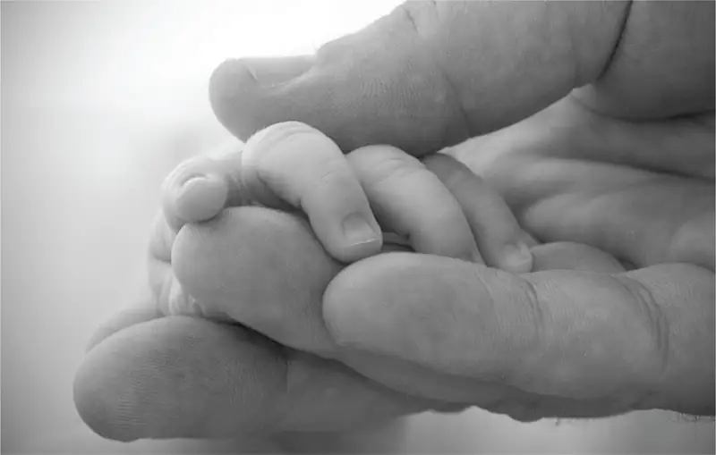
Welcome to the story of your life. In this chapter we explore the fascinating tale of how you have grown and developed into the person you are today. We also look at some ideas about who you will grow into tomorrow. Yours is a story of lifespan development (Figure 9.1), from the start of life to the end.
The process of human growth and development is more obvious in infancy and childhood, yet your development is happening this moment and will continue, minute by minute, for the rest of your life. Who you are today and who you will be in the future depends on a blend of genetics, environment, culture, relationships, and more, as you continue through each phase of life. You have experienced firsthand much of what is discussed in this chapter. Now consider what psychological science has to say about your physical, cognitive, and psychosocial development, from the womb to the tomb.
9.1 What Is Lifespan Development?¶
Learning Objectives
By the end of this section, you will be able to:
- Define and distinguish between the three domains of development: physical, cognitive and psychosocial
- Discuss the normative approach to development
- Understand the three major issues in development: continuity and discontinuity, one common course of development or many unique courses of development, and nature versus nurture
My heart leaps up when I behold
A rainbow in the sky:
So was it when my life began;
So is it now I am a man;
So be it when I shall grow old,
Or let me die!
The Child is father of the Man;
I could wish my days to be
Bound each to each by natural piety. (Wordsworth, 1802)
In this poem, William Wordsworth writes, “the child is father of the man.” What does this seemingly incongruous statement mean, and what does it have to do with lifespan development? Wordsworth might be suggesting that the person he is as an adult depends largely on the experiences he had in childhood. Consider the following questions: To what extent is the adult you are today influenced by the child you once were? To what extent is a child fundamentally different from the adult he grows up to be?
These are the types of questions developmental psychologists try to answer, by studying how humans change and grow from conception through childhood, adolescence, adulthood, and death. They view development as a lifelong process that can be studied scientifically across three developmental domains—physical, cognitive, and psychosocial development. Physical development involves growth and changes in the body and brain, the senses, motor skills, and health and wellness. Cognitive development involves learning, attention, memory, language, thinking, reasoning, and creativity. Psychosocial development involves emotions, personality, and social relationships. We refer to these domains throughout the chapter.
Connect the Concepts: Research Methods in Developmental Psychology
You’ve learned about a variety of research methods used by psychologists. Developmental psychologists use many of these approaches in order to better understand how individuals change mentally and physically over time. These methods include naturalistic observations, case studies, surveys, and experiments, among others.
Naturalistic observations involve observing behavior in its natural context. A developmental psychologist might observe how children behave on a playground, at a daycare center, or in the child’s own home. While this research approach provides a glimpse into how children behave in their natural settings, researchers have very little control over the types and/or frequencies of displayed behavior.
In a case study, developmental psychologists collect a great deal of information from one individual in order to better understand physical and psychological changes over the lifespan. This particular approach is an excellent way to better understand individuals, who are exceptional in some way, but it is especially prone to researcher bias in interpretation, and it is difficult to generalize conclusions to the larger population.
In one classic example of this research method being applied to a study of lifespan development Sigmund Freud analyzed the development of a child known as “Little Hans” (Freud, 1909/1949). Freud’s findings helped inform his theories of psychosexual development in children, which you will learn about later in this chapter. Little Genie, the subject of a case study discussed in the chapter on thinking and intelligence, provides another example of how psychologists examine developmental milestones through detailed research on a single individual. In Genie’s case, her neglectful and abusive upbringing led to her being unable to speak until, at age 13, she was removed from that harmful environment. As she learned to use language, psychologists were able to compare how her language acquisition abilities differed when occurring in her late-stage development compared to the typical acquisition of those skills during the ages of infancy through early childhood (Fromkin, Krashen, Curtiss, Rigler, & Rigler, 1974; Curtiss, 1981).
The survey method asks individuals to self-report important information about their thoughts, experiences, and beliefs. This particular method can provide large amounts of information in relatively short amounts of time; however, validity of data collected in this way relies on honest self-reporting, and the data is relatively shallow when compared to the depth of information collected in a case study. An example of comprehensive survey was the research done by Ruth W. Howard. In 1934, she obtained her doctorate by surveying 229 sets of triplets, the most comprehensive research of triplets completed at the time. This pioneering woman was also the first African-American woman to earn a PhD in psychology (American Psychological Association, 2019).
Experiments involve significant control over extraneous variables and manipulation of the independent variable. As such, experimental research allows developmental psychologists to make causal statements about certain variables that are important for the developmental process. Because experimental research must occur in a controlled environment, researchers must be cautious about whether behaviors observed in the laboratory translate to an individual’s natural environment.
Later in this chapter, you will learn about several experiments in which toddlers and young children observe scenes or actions so that researchers can determine at what age specific cognitive abilities develop. For example, children may observe a quantity of liquid poured from a short, fat glass into a tall, skinny glass. As the experimenters question the children about what occurred, the subjects’ answers help psychologists understand at what age a child begins to comprehend that the volume of liquid remained the same although the shapes of the containers differ.
Across these three domains—physical, cognitive, and psychosocial—the normative approach to development is also discussed. This approach asks, “What is normal development?” In the early decades of the 20th century, normative psychologists studied large numbers of children at various ages to determine norms (i.e., average ages) of when most children reach specific developmental milestones in each of the three domains (Gesell, 1933, 1939, 1940; Gesell & Ilg, 1946; Hall, 1904). Note that while they are still in use, the terms "normal" and "normative" often require deeper consideration, and some researchers and practitioners aim to avoid them. Psychologists often consider typical or "normal" signs in order to diagnose when a child may need examination or support. Although children develop at slightly different rates, we can use these age-related averages as general guidelines to compare children with same-age peers to determine the approximate ages they should reach specific normative events called developmental milestones (e.g., crawling, walking, writing, dressing, naming colors, speaking in sentences, and starting puberty).
Not all normative events are universal, meaning they are not experienced by all individuals across all cultures. Biological milestones, such as puberty, tend to be universal, but social milestones, such as the age when children begin formal schooling, are not necessarily universal; instead, they affect most individuals in a particular culture (Gesell & Ilg, 1946). For example, in some countries children begin school around 5 or 6 years old, but other countries, children often enter school at an advanced age, or have limitations or interruptions in their education. For example, UNESCO estimates that nearly 244 million of the world's school-aged children still do not have access to school (Antoninis, 2022).
To better understand the normative approach, imagine two new mothers, Louisa and Kimberly, who are close friends and have children around the same age. Louisa’s daughter is 14 months old, and Kimberly’s son is 12 months old. According to the normative approach, the average age a child starts to walk is 12 months. However, at 14 months Louisa’s daughter still isn’t walking. She tells Kimberly she is worried that something might be wrong with her baby. Kimberly is surprised because her son started walking when he was only 10 months old. Should Louisa be worried? Should she be concerned if her daughter is not walking by 15 months or 18 months?
Link to Learning
The Centers for Disease Control and Prevention (CDC) describes the developmental milestones for children from 2 months through 5 years old. After reviewing the information, take this Developmental Milestones Quiz to see how well you recall what you’ve learned. If you are a parent with concerns about your child’s development, contact your pediatrician.
Issues in Developmental Psychology¶
There are many different theoretical approaches regarding human development. As we evaluate them in this chapter, recall that developmental psychology focuses on how people change, and keep in mind that all the approaches that we present in this chapter address questions of change: Is the change smooth or uneven (continuous versus discontinuous)? Is this pattern of change the same for everyone, or are there many different patterns of change (one course of development versus many courses)? How do genetics and environment interact to influence development (nature versus nurture)?
Is Development Continuous or Discontinuous?¶
Continuous development views development as a cumulative process, gradually improving on existing skills (Figure 9.2). With this type of development, there is gradual change. Consider, for example, a child’s physical growth: adding inches to height year by year. In contrast, theorists who view development as discontinuous believe that development takes place in unique stages: It occurs at specific times or ages. With this type of development, the change is more sudden, such as an infant’s ability to conceive object permanence.
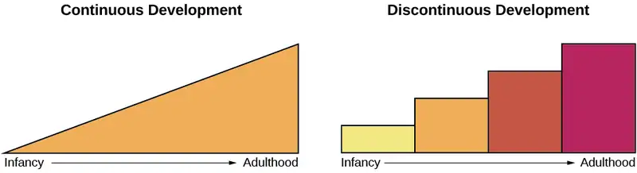
Is There One Course of Development or Many?¶
Is development essentially the same, or universal, for all children (i.e., there is one course of development) or does development follow a different course for each child, depending on the child’s specific genetics and environment (i.e., there are many courses of development)? Do people across the world share more similarities or more differences in their development? How much do culture and genetics influence a child’s behavior?
Stage theories hold that the sequence of development is universal. For example, in cross-cultural studies of language development, children from around the world reach language milestones in a similar sequence (Gleitman & Newport, 1995). Infants in all cultures coo before they babble. They begin babbling at about the same age and utter their first word around 12 months old. Yet we live in diverse contexts that have a unique effect on each of us. For example, researchers once believed that motor development follows one course for all children regardless of culture. However, child care practices vary by culture, and different practices have been found to accelerate or inhibit achievement of developmental milestones such as sitting, crawling, and walking (Karasik, Adolph, Tamis-LeMonda, & Bornstein, 2010).
For instance, let’s look at the Aché society in Paraguay. They spend a significant amount of time foraging in forests. While foraging, Aché mothers carry their young children, rarely putting them down in order to protect them from getting hurt in the forest. Consequently, their children walk much later: They walk around 23–25 months old, in comparison to infants in Western cultures who begin to walk around 12 months old. However, as Aché children become older, they are allowed more freedom to move about, and by about age 9, their motor skills surpass those of U.S. children of the same age: Aché children are able to climb trees up to 25 feet tall and use machetes and other tools (Kaplan & Dove, 1987). As you can see, our development is influenced by multiple contexts, so the timing of basic motor functions may vary across cultures. However, the functions themselves are present in all societies (Figure 9.3).
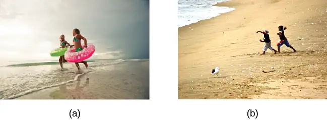
How Do Nature and Nurture Influence Development?¶
Are we who we are because of nature (biology and genetics), or are we who we are because of nurture (our environment and culture)? This longstanding question is known in psychology as the nature versus nurture debate. It seeks to understand how our personalities and traits are the product of our genetic makeup and biological factors, and how they are shaped by our environment, including our guardians, peers, and culture. For instance, why do biological children sometimes act like their parents—is it because of genetics or because of early childhood environment and what the child has learned from the parents? What about children who are adopted—are they more like their biological families or more like their adoptive families? And how can siblings from the same family be so different?
We are all born with specific genetic traits inherited from our biological parents, such as eye color, height, and certain personality traits. Beyond our basic genotype, however, there is a deep interaction between our genes and our environment: Our unique experiences in our environment influence whether and how particular traits are expressed, and at the same time, our genes influence how we interact with our environment (Diamond, 2009; Lobo, 2008). This chapter will show that there is a reciprocal interaction between nature and nurture as they both shape who we become, but the debate continues as to the relative contributions of each.
Dig Deeper: The Achievement Gap: How Does Socioeconomic Status Affect Development?
The achievement gap refers to the persistent difference in grades, test scores, and graduation rates that exist among students of different ethnicities, races, and—in certain subjects—genders (Winerman, 2011). Research suggests that these achievement gaps are strongly influenced by differences in socioeconomic factors that exist among the families of these children. While the researchers acknowledge that programs aimed at reducing such socioeconomic discrepancies would likely aid in equalizing the aptitude and performance of children from different backgrounds, they recognize that such large-scale interventions would be difficult to achieve. Therefore, it is recommended that programs aimed at fostering aptitude and achievement among children with lower socioeconomic status may be the best option for dealing with issues related to academic achievement gaps (Duncan & Magnuson, 2005).
Children from low-income households perform significantly more poorly than their middle- and high-income peers on a number of educational variables: They have significantly lower standardized test scores, graduation rates, and college entrance rates, and they have much higher school dropout rates. There have been attempts to correct the achievement gap through state and federal legislation, but what if the problems start before the children even enter school?
Psychologists Betty Hart and Todd Risley (2006) spent their careers looking at early language ability and progression of children in various income levels. In one longitudinal study, they found that although all the parents in the study engaged and interacted with their children, parents with middle- and high-income status interacted with their children differently than parents with lower-income status. After analyzing 1,300 hours of parent-child interactions, the researchers found that middle- and high-income parents talk to their children significantly more, starting when the children are infants. By 3 years old, children from higher-income households knew almost double the number of words known by their peers from lower-income households, and they had heard an estimated total of 30 million more words than the children from low-income households (Hart & Risley, 2003). And the gaps only become more pronounced. Before entering kindergarten, children with higher-income status score 60% higher on achievement tests than their peers with lower-income status (Lee & Burkam, 2002).
There are solutions to this problem. At the University of Chicago, experts are working with low-income families, visiting them at their homes, and encouraging them to speak more to their children on a daily and hourly basis. Other experts are designing preschools in which students from diverse economic backgrounds are placed in the same classroom. In this research, children with lower socioeconomic status made significant gains in their language development, likely as a result of attending the specialized preschool (Schechter & Byeb, 2007). What other methods or interventions could be used to decrease the achievement gap? What types of activities could be implemented to help the children of your community or a neighboring community?
9.2 Lifespan Theories¶
Learning Objectives
By the end of this section, you will be able to:
- Discuss Freud’s theory of psychosexual development
- Describe the major tasks of child and adult psychosocial development according to Erikson
- Discuss Piaget’s view of cognitive development and apply the stages to understanding childhood cognition
- Describe Kohlberg’s theory of moral development
- Compare and contrast the strengths and weaknesses of major developmental theories
There are many theories regarding how babies and children grow and develop into happy, healthy adults. We explore several of these theories in this section.
Psychosexual Theory of Development¶
Sigmund Freud (1856–1939) believed that personality develops during early childhood. For Freud, childhood experiences shape our personalities and behavior as adults. Freud viewed development as discontinuous; he believed that each of us must pass through a series of stages during childhood, and that if we lack proper nurturance and parenting during a stage, we may become stuck, or fixated, in that stage. Freud’s stages are called the stages of psychosexual development. According to Freud, children’s pleasure-seeking urges are focused on a different area of the body, called an erogenous zone, at each of the five stages of development: oral, anal, phallic, latency, and genital.
While most of Freud’s ideas have not found support in modern research, we cannot discount the contributions that Freud has made to the field of psychology. Psychologists today dispute Freud's psychosexual stages as a legitimate explanation for how one's personality develops, but what we can take away from Freud’s theory is that personality is shaped, in some part, by experiences we have in childhood. These stages are discussed in detail in the chapter on personality.
Psychosocial Theory of Development¶
Erik Erikson (1902–1994) (Figure 9.4), another stage theorist, took Freud’s theory and modified it as psychosocial theory. Erikson’s psychosocial development theory emphasizes the social nature of our development rather than its sexual nature. While Freud believed that personality is shaped only in childhood, Erikson proposed that personality development takes place all through the lifespan. Erikson suggested that how we interact with others is what affects our sense of self, or what he called the ego identity.
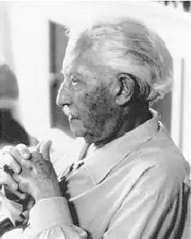
Erikson proposed that we are motivated by a need to achieve competence in certain areas of our lives. According to psychosocial theory, we experience eight stages of development over our lifespan, from infancy through late adulthood. At each stage there is a conflict, or task, that we need to resolve. Successful completion of each developmental task results in a sense of competence and a healthy personality. Failure to master these tasks leads to feelings of inadequacy.
According to Erikson (1963), trust is the basis of our development during infancy (birth to 12 months). Therefore, the primary task of this stage is trust versus mistrust. Infants are dependent upon their caregivers, so caregivers who are responsive and sensitive to their infant’s needs help their baby to develop a sense of trust; their baby will see the world as a safe, predictable place. Unresponsive caregivers who do not meet their baby’s needs can engender feelings of anxiety, fear, and mistrust; their baby may see the world as unpredictable.
As toddlers (ages 1–3 years) begin to explore their world, they learn that they can control their actions and act on the environment to get results. They begin to show clear preferences for certain elements of the environment, such as food, toys, and clothing. A toddler’s main task is to resolve the issue of autonomy versus shame and doubt, by working to establish independence. This is the “me do it” stage. For example, we might observe a budding sense of autonomy in a 2-year-old child who wants to choose her clothes and dress herself. Although her outfits might not be appropriate for the situation, her input in such basic decisions has an effect on her sense of independence. If denied the opportunity to act on her environment, she may begin to doubt her abilities, which could lead to low self-esteem and feelings of shame.
Once children reach the preschool stage (ages 3–6 years), they are capable of initiating activities and asserting control over their world through social interactions and play. According to Erikson, preschool children must resolve the task of initiative versus guilt. By learning to plan and achieve goals while interacting with others, preschool children can master this task. Those who do will develop self-confidence and feel a sense of purpose. Those who are unsuccessful at this stage—with their initiative misfiring or stifled—may develop feelings of guilt. How might over-controlling parents stifle a child’s initiative?
During the elementary school stage (ages 7–11), children face the task of industry versus inferiority. Children begin to compare themselves to their peers to see how they measure up. They either develop a sense of pride and accomplishment in their schoolwork, sports, social activities, and family life, or they feel inferior and inadequate when they don’t measure up. What are some things parents and teachers can do to help children develop a sense of competence and a belief in themselves and their abilities?
In adolescence (ages 12–18), children face the task of identity versus role confusion. According to Erikson, an adolescent’s main task is developing a sense of self. Adolescents struggle with questions such as “Who am I?” and “What do I want to do with my life?” Along the way, most adolescents try on many different selves to see which ones fit. Adolescents who are successful at this stage have a strong sense of identity and are able to remain true to their beliefs and values in the face of problems and other people’s perspectives. What happens to apathetic adolescents, who do not make a conscious search for identity, or those who are pressured to conform to their parents’ ideas for the future? These teens will have a weak sense of self and experience role confusion. They are unsure of their identity and confused about the future.
People in early adulthood (ages 19–29) are concerned with intimacy versus isolation. After we have developed a sense of self in adolescence, we are ready to share our life with others. Erikson said that we must have a strong sense of self before developing intimate relationships with others. Adults who do not develop a positive self-concept in adolescence may experience feelings of loneliness and emotional isolation.
When people reach 30, they enter the time known as middle adulthood, which extends to age 64. The social task of middle adulthood is generativity versus stagnation. Generativity involves finding your life’s work and contributing to the development of others, through activities such as volunteering, mentoring, and raising children. Those who do not master this task may experience stagnation, having little connection with others and little interest in productivity and self-improvement.
From age 65 to the end of life, we are in the period of development known as late adulthood. Erikson’s task at this stage is called integrity versus despair. He said that people in late adulthood reflect on their lives and feel either a sense of satisfaction or a sense of failure. People who feel proud of their accomplishments feel a sense of integrity, and they can look back on their lives with few regrets. However, people who are not successful at this stage may feel as if their life has been wasted. They focus on what “would have,” “should have,” and “could have” been. They face the end of their lives with feelings of bitterness, depression, and despair. Table 9.1 summarizes the stages of Erikson’s theory.
Table 9.1
| Erikson’s Psychosocial Stages of Development | |||
|---|---|---|---|
| Stage | Age (years) | Developmental Task | Description |
| 1 | 0–1 | Trust vs. mistrust | Trust (or mistrust) that basic needs, such as nourishment and affection, will be met |
| 2 | 1–3 | Autonomy vs. shame/doubt | Develop a sense of independence in many tasks |
| 3 | 3–6 | Initiative vs. guilt | Take initiative on some activities—may develop guilt when unsuccessful or boundaries overstepped |
| 4 | 7–11 | Industry vs. inferiority | Develop self-confidence in abilities when competent or sense of inferiority when not |
| 5 | 12–18 | Identity vs. confusion | Experiment with and develop identity and roles |
| 6 | 19–29 | Intimacy vs. isolation | Establish intimacy and relationships with others |
| 7 | 30–64 | Generativity vs. stagnation | Contribute to society and be part of a family |
| 8 | 65– | Integrity vs. despair | Assess and make sense of life and meaning of contributions |
Cognitive Theory of Development¶
Jean Piaget (1896–1980) is another stage theorist who studied childhood development (Figure 9.5). Instead of approaching development from a psychoanalytical or psychosocial perspective, Piaget focused on children’s cognitive growth. He believed that thinking is a central aspect of development and that children are naturally inquisitive. However, he said that children do not think and reason like adults (Piaget, 1930, 1932). His theory of cognitive development holds that our cognitive abilities develop through specific stages, which exemplifies the discontinuity approach to development. As we progress to a new stage, there is a distinct shift in how we think and reason.
Piaget said that children develop schemata to help them understand the world. Schemata are concepts (mental models) that are used to help us categorize and interpret information. By the time children have reached adulthood, they have created schemata for almost everything. When children learn new information, they adjust their schemata through two processes: assimilation and accommodation. First, they assimilate new information or experiences in terms of their current schemata: assimilation is when they take in information that is comparable to what they already know. Accommodation describes when they change their schemata based on new information. This process continues as children interact with their environment.
For example, 2-year-old Abdul learned the schema for dogs because his family has a Labrador retriever. When Abdul sees other dogs in his picture books, he says, “Look mommy, dog!” Thus, he has assimilated them into his schema for dogs. One day, Abdul sees a sheep for the first time and says, “Look mommy, dog!” Having a basic schema that a dog is an animal with four legs and fur, Abdul thinks all furry, four-legged creatures are dogs. When Abdul’s mom tells him that the animal he sees is a sheep, not a dog, Abdul must accommodate his schema for dogs to include more information based on his new experiences. Abdul’s schema for dog was too broad, since not all furry, four-legged creatures are dogs. He now modifies his schema for dogs and forms a new one for sheep.
Like Freud and Erikson, Piaget thought development unfolds in a series of stages approximately associated with age ranges. He proposed a theory of cognitive development that unfolds in four stages: sensorimotor, preoperational, concrete operational, and formal operational (Table 9.2).
Table 9.2
| Piaget’s Stages of Cognitive Development | |||
|---|---|---|---|
| Age (years) | Stage | Description | Developmental issues |
| 0–2 | Sensorimotor | World experienced through senses and actions | Object permanence Stranger anxiety |
| 2–6 | Preoperational | Use words and images to represent things, but lack logical reasoning | Pretend play Egocentrism Language development |
| 7–11 | Concrete operational | Understand concrete events and analogies logically; perform arithmetical operations | Conservation Mathematical transformations |
| 12– | Formal operational | Formal operations Utilize abstract reasoning |
Abstract logic Moral reasoning |
The first stage is the sensorimotor stage, which lasts from birth to about 2 years old. During this stage, children learn about the world through their senses and motor behavior. Young children put objects in their mouths to see if the items are edible, and once they can grasp objects, they may shake or bang them to see if they make sounds. Between 5 and 8 months old, the child develops object permanence, which is the understanding that even if something is out of sight, it still exists (Bogartz, Shinskey, & Schilling, 2000). According to Piaget, young infants do not remember an object after it has been removed from sight. Piaget studied infants’ reactions when a toy was first shown to an infant and then hidden under a blanket. Infants who had already developed object permanence would reach for the hidden toy, indicating that they knew it still existed, whereas infants who had not developed object permanence would appear confused.
Link to Learning
Please take a few minutes and view this brief video demonstrating different children's abilities to understand object permanence to learn more.
In Piaget’s view, around the same time children develop object permanence, they also begin to exhibit stranger anxiety, which is a fear of unfamiliar people. Babies may demonstrate this by crying and turning away from a stranger, by clinging to a caregiver, or by attempting to reach their arms toward familiar faces such as parents. Stranger anxiety results when a child is unable to assimilate the stranger into an existing schema; therefore, she can’t predict what her experience with that stranger will be like, which results in a fear response.
Piaget’s second stage is the preoperational stage, which is from approximately 2 to 7 years old. In this stage, children can use symbols to represent words, images, and ideas, which is why children in this stage engage in pretend play. A child’s arms might become airplane wings as they zoom around the room, or a child with a stick might become a brave knight with a sword. Children also begin to use language in the preoperational stage, but they cannot understand adult logic or mentally manipulate information (the term operational refers to logical manipulation of information, so children at this stage are considered to be pre-operational). Children’s logic is based on their own personal knowledge of the world so far, rather than on conventional knowledge. For example, dad gave a slice of pizza to 10-year-old Keiko and another slice to her 3-year-old brother, Kenny. Kenny’s pizza slice was cut into five pieces, so Kenny told his sister that he got more pizza than she did. Children in this stage cannot perform mental operations because they have not developed an understanding of conservation, which is the idea that even if you change the appearance of something, it is still equal in size as long as nothing has been removed or added.
Link to Learning
Watch this video of a boy in the preoperational stage responding to Piaget's conservation tasks to learn more.
During this stage, we also expect children to display egocentrism, which means that the child is not able to take the perspective of others. A child at this stage thinks that everyone sees, thinks, and feels just as they do. Let’s look at Kenny and Keiko again. Keiko’s birthday is coming up, so their mom takes Kenny to the toy store to choose a present for his sister. He selects an Iron Man action figure for her, thinking that if he likes the toy, his sister will too. An egocentric child is not able to infer the perspective of other people and instead attributes his own perspective.
Link to Learning
Piaget developed the Three-Mountain Task to determine the level of egocentrism displayed by children. Children view a 3-dimensional mountain scene from one viewpoint, and are asked what another person at a different viewpoint would see in the same scene. Watch this short video of the Three Mountain Task in action from the University of Minnesota and the Science Museum of Minnesota.
Piaget’s third stage is the concrete operational stage, which occurs from about 7 to 11 years old. In this stage, children can think logically about real (concrete) events; they have a firm grasp on the use of numbers and start to employ memory strategies. They can perform mathematical operations and understand transformations, such as addition is the opposite of subtraction, and multiplication is the opposite of division. In this stage, children also master the concept of conservation: Even if something changes shape, its mass, volume, and number stay the same. For example, if you pour water from a tall, thin glass to a short, fat glass, you still have the same amount of water. Remember Keiko and Kenny and the pizza? How did Keiko know that Kenny was wrong when he said that he had more pizza?
Children in the concrete operational stage also understand the principle of reversibility, which means that objects can be changed and then returned back to their original form or condition. Take, for example, water that you poured into the short, fat glass: You can pour water from the fat glass back to the thin glass and still have the same amount (minus a couple of drops).
The fourth, and last, stage in Piaget’s theory is the formal operational stage, which is from about age 11 to adulthood. Whereas children in the concrete operational stage are able to think logically only about concrete events, children in the formal operational stage can also deal with abstract ideas and hypothetical situations. Children in this stage can use abstract thinking to problem solve, look at alternative solutions, and test these solutions. In adolescence, a renewed egocentrism occurs. For example, a 15-year-old with a very small pimple on her face might think it is huge and incredibly visible, under the mistaken impression that others must share her perceptions.
Beyond Formal Operational Thought¶
As with other major contributors of theories of development, several of Piaget’s ideas have come under criticism based on the results of further research. For example, several contemporary studies support a model of development that is more continuous than Piaget’s discrete stages (Courage & Howe, 2002; Siegler, 2005, 2006). Many others suggest that children reach cognitive milestones earlier than Piaget describes (Baillargeon, 2004; de Hevia & Spelke, 2010).
According to Piaget, the highest level of cognitive development is formal operational thought, which develops between 11 and 20 years old. However, many developmental psychologists disagree with Piaget, suggesting a fifth stage of cognitive development, known as the postformal stage (Basseches, 1984; Commons & Bresette, 2006; Sinnott, 1998). In postformal thinking, decisions are made based on situations and circumstances, and logic is integrated with emotion as adults develop principles that depend on contexts. One way that we can see the difference between an adult in postformal thought and an adolescent in formal operations is in terms of how they handle emotionally charged issues.
It seems that once we reach adulthood our problem solving abilities change: As we attempt to solve problems, we tend to think more deeply about many areas of our lives, such as relationships, work, and politics (Labouvie-Vief & Diehl, 1999). Because of this, postformal thinkers are able to draw on past experiences to help them solve new problems. Problem-solving strategies using postformal thought vary, depending on the situation. What does this mean? Adults can recognize, for example, that what seems to be an ideal solution to a problem at work involving a disagreement with a colleague may not be the best solution to a disagreement with a significant other.
Connect the Concepts: Neuroconstructivism
The genetic environmental correlation you’ve learned about concerning the bidirectional influence of genes and the environment has been explored in more recent theories (Newcombe, 2011). One such theory, neuroconstructivism, suggests that neural brain development influences cognitive development. Experiences that a child encounters can impact or change the way that neural pathways develop in response to the environment. An individual’s behavior is based on how one understands the world. There is interaction between neural and cognitive networks at and between each level, consisting of these:
- genes
- neurons
- brain
- body
- social environment
These interactions shape mental representations in the brain and are dependent on context that individuals actively explore throughout their lifetimes (Westermann, Mareschal, Johnson, Sirois, Spratling, & Thomas, 2007).
An example of this would be a child who may be genetically predisposed to a difficult temperament. They may have parents who provide a social environment in which they are encouraged to express themselves in an optimal manner. The child's brain would form neural connections enhanced by that environment, thus influencing the brain. The brain gives information to the body about how it will experience the environment. Thus, neural and cognitive networks work together to influence genes (i.e., attenuating temperament), body (i.e., may be less prone to high blood pressure), and social environment (i.e., may seek people who are similar to them).
Sociocultural Theory of Development¶
Lev Vygotsky was a Russian psychologist who proposed a sociocultural theory of development. He suggested that human development is rooted in one’s culture. A child’s social world, for example, forms the basis for the formation of language and thought. The language one speaks and the ways a person thinks about things are dependent on one’s cultural background. Vygotsky also considered historical influences as key to one’s development. He was interested in the process of development and the individual’s interactions with their environment (John-Steiner & Mahn, 1996).
Moral Theory Of Development¶
A major task beginning in childhood and continuing into adolescence is discerning right from wrong. Psychologist Lawrence Kohlberg (1927–1987) extended upon the foundation that Piaget built regarding cognitive development. Kohlberg believed that moral development, like cognitive development, follows a series of stages. To develop this theory, Kohlberg posed moral dilemmas to people of all ages, and then he analyzed their answers to find evidence of their particular stage of moral development. Before reading about the stages, take a minute to consider how you would answer one of Kohlberg's best-known moral dilemmas, commonly known as the Heinz dilemma:
In Europe, a woman was near death from a special kind of cancer. There was one drug that the doctors thought might save her. It was a form of radium that a druggist in the same town had recently discovered. The drug was expensive to make, but the druggist was charging ten times what the drug cost him to make. He paid $200 for the radium and charged $2,000 for a small dose of the drug. The sick woman's husband, Heinz, went to everyone he knew to borrow the money, but he could only get together about $1,000, which is half of what it cost. He told the druggist that his wife was dying and asked him to sell it cheaper or let him pay later. But the druggist said: “No, I discovered the drug and I'm going to make money from it.” So Heinz got desperate and broke into the man's store to steal the drug for his wife. Should the husband have done that? (Kohlberg, 1969, p. 379)
How would you answer this dilemma? Kohlberg was not interested in whether you answer yes or no to the dilemma: Instead, he was interested in the reasoning behind your answer.
After presenting people with this and various other moral dilemmas, Kohlberg reviewed people’s responses and placed them in different stages of moral reasoning (Figure 9.6). According to Kohlberg, an individual progresses from the capacity for pre-conventional morality (before age 9) to the capacity for conventional morality (early adolescence), and toward attaining post-conventional morality (once formal operational thought is attained), which only a few fully achieve. Kohlberg placed in the highest stage responses that reflected the reasoning that Heinz should steal the drug because his wife’s life is more important than the pharmacist making money. The value of a human life overrides the pharmacist’s greed.
![Nine boxes are arranged in rows and columns of three. The top left box contains “Level 1, Pre-conventional Morality.” A line connects this box with another box to the right containing “Stage 1, Obedience and punishment: behavior driven by avoiding punishment.” To the right is another box connected by a line containing “Stage 2, Individual interest: behavior driven by self-interest and rewards.” The middle left box contains “Level 2, Conventional Morality.” A line connects this box with another box to the right containing “Stage 3, Interpersonal: behavior driven by social approval.” To the right is another box connected by a line containing “Stage 4, Authority: behavior driven by obeying authority and conforming to social order.” The lower left box contains “Level 3, Post-conventional Morality.” A line connects this box with another box to the right containing “Stage 5, Social contract: behavior driven by balance of social order and individual rights.” To the right is another box connected by a line containing “Stage 6, Universal ethics: behavior driven by internal moral principles.”](img/cnx-psych-09-03-kohlstage.webp)
It is important to realize that even those people who have the most sophisticated, post-conventional reasons for some choices may make other choices for the simplest of pre-conventional reasons. Many psychologists agree with Kohlberg's theory of moral development but point out that moral reasoning is very different from moral behavior. Sometimes what we say we would do in a situation is not what we actually do in that situation. In other words, we might “talk the talk,” but not “walk the walk.”
How does this theory apply to people of different genders? Kohlberg (1969) felt that more men than women move past stage four in their moral development. He went on to note that women seem to be deficient in their moral reasoning abilities. These ideas were not well received by Carol Gilligan, a research assistant of Kohlberg, who consequently developed her own ideas of moral development. In her groundbreaking book, In a Different Voice: Psychological Theory and Women’s Development, Gilligan (1982) criticized her former mentor’s theory because it was based only on upper class White men and boys. She argued that women are not deficient in their moral reasoning—she proposed that different genders reason differently. Girls and women focus more on staying connected and the importance of interpersonal relationships. Therefore, in the Heinz dilemma, many girls and women respond that Heinz should not steal the medicine. Their reasoning is that if he steals the medicine, is arrested, and is put in jail, then he and his wife will be separated, and she could die while he is still in prison.
9.3 Stages of Development¶
Learning Objectives
By the end of this section, you will be able to:
- Describe the stages of prenatal development and recognize the importance of prenatal care
- Appraise physical, cognitive, and emotional development that occurs from infancy through childhood
- Compare and contrast physical, cognitive, and emotional development that occurs during adolescence
- Examine physical, cognitive, and emotional development that occurs in adulthood
From the moment we are born until the moment we die, we continue to develop.
As discussed at the beginning of this chapter, developmental psychologists often divide our development into three areas: physical development, cognitive development, and psychosocial development. Mirroring Erikson’s stages, lifespan development is divided into different stages that are based on age. We will discuss prenatal, infant, child, adolescent, and adult development.
Prenatal Development¶
How did you come to be who you are? From beginning as a one-cell structure to your birth, your prenatal development occurred in an orderly and delicate sequence.
There are three stages of prenatal development: germinal, embryonic, and fetal. Let’s take a look at what happens to the developing baby in each of these stages.
Germinal Stage (Weeks 1–2)¶
In the discussion of biopsychology earlier in the book, you learned about genetics and DNA. DNA is passed on to the child at the moment of conception. Conception occurs when sperm fertilizes an egg and forms a zygote (Figure 9.7). A zygote begins as a one-cell structure that is created when a sperm and egg merge. The genetic makeup and sex of the zygote are set at this point. During the first week after conception, the zygote divides and multiplies, going from a one-cell structure to two cells, then four cells, then eight cells, and so on. This process of cell division is called mitosis. Mitosis is a fragile process, and fewer than one-half of all zygotes survive beyond the first two weeks (Hall, 2004). After 5 days of mitosis there are 100 cells, and after 9 months there are billions of cells. As the cells divide, they become more specialized, forming different organs and body parts. In the germinal stage, the mass of cells has yet to attach itself to the lining of the uterus. Once it does, the next stage begins.
Embryonic Stage (Weeks 3–8)¶
After the zygote divides for about 7–10 days and has 150 cells, it travels down the fallopian tubes and implants itself in the lining of the uterus. Upon implantation, this multi-cellular organism is called an embryo. Now blood vessels grow, forming the placenta. The placenta is a structure connected to the uterus that provides nourishment and oxygen to the developing embryo via the umbilical cord. Basic structures of the embryo start to develop into areas that will become the head, chest, and abdomen. During the embryonic stage, the heart begins to beat and organs form and begin to function. The neural tube forms along the back of the embryo, developing into the spinal cord and brain.
Fetal Stage (Weeks 9–40)¶
When the organism is about nine weeks old, the embryo is called a fetus. At this stage, the fetus is about the size of a kidney bean and begins to take on the recognizable form of a human being as the “tail” begins to disappear.
From 9–12 weeks, the sex organs begin to differentiate. At about 16 weeks, the fetus is approximately 4.5 inches long. Fingers and toes are fully developed, and fingerprints are visible. By the time the fetus reaches the sixth month of development (24 weeks), it weighs up to 1.4 pounds. Hearing has developed, so the fetus can respond to sounds. The internal organs, such as the lungs, heart, stomach, and intestines, have formed enough that a fetus born prematurely at this point has a chance to survive outside of the womb. Throughout the fetal stage the brain continues to grow and develop, nearly doubling in size from weeks 16 to 28. Around 36 weeks, the fetus is almost ready for birth. It weighs about 6 pounds and is about 18.5 inches long, and by week 37 all of the fetus’s organ systems are developed enough that it could survive outside the uterus without many of the risks associated with premature birth. The fetus continues to gain weight and grow in length until approximately 40 weeks. By then, the fetus has very little room to move around and birth becomes imminent. The progression through the stages is shown in Figure 9.8.
![The growth of a fetus is shown using nine pictures in different stages of development. For each stage, there is a picture of a fetus which gets progressively larger and more mature. The first stage is labeled “9 weeks; fetal stage begins.” The second stage is labeled “12 weeks; sex organs differentiate.” The third stage is labeled “16 weeks; fingers and toes develop.” The fourth stage is labeled “20 weeks; hearing begins.” The fifth stage is labeled “24 weeks; lungs begin to develop.” The sixth stage is labeled “28 weeks; brain grows rapidly.” The seventh stage is labeled “32 weeks; bones fully develop.” The eighth stage is labeled “36 weeks; muscles fully develop.” The ninth stage is labeled “40 weeks; full-term development.”](img/cnx-psych-09-02-stages.webp)
Link to Learning
For an amazing look at prenatal development and the process of birth, view the video Life’s Greatest Miracle from Nova and PBS.
Prenatal Influences¶
During each prenatal stage, genetic and environmental factors can affect development. The developing fetus is completely dependent on the person carrying it. Routine prenatal care, which is medical care during pregnancy that monitors the health of both the pregnant person and the fetus (Figure 9.9), is important because it can reduce the risk of complications during pregnancy (NIH, 2013). In fact, people who are trying to become pregnant or who may become pregnant should discuss pregnancy planning with their doctor. They may be advised, for example, to take a vitamin containing folic acid, which helps prevent certain birth defects, or to monitor aspects of their diet or exercise routines. People can face health risks without prenatal care, which is not provided equitably across populations or locations (Backes and Scrimshaw, 2020).
Recall that when the zygote attaches to the wall of the uterus, the placenta is formed. The placenta provides nourishment and oxygen to the fetus. Most everything a pregnant person ingests, including food, liquid, and even medication, travels through the placenta to the fetus, hence the common phrase “eating for two.” Everything in the environment affects the fetus; if they are exposed to something harmful, the child can show life-long effects.
A teratogen is any environmental agent—biological, chemical, or physical—that causes damage to the developing embryo or fetus. There are different types of teratogens. Alcohol and most drugs cross the placenta and affect the fetus. Alcohol is not safe to drink in any amount during pregnancy. Alcohol use during pregnancy has been found to be the leading preventable cause of intellectual disabilities in children in the United States (Maier & West, 2001). Excessive drinking while pregnant can cause fetal alcohol spectrum disorders with life-long consequences for the child ranging in severity from minor to major (Table 9.3). Fetal alcohol spectrum disorders (FASD) are a collection of birth defects associated with heavy consumption of alcohol during pregnancy. Physically, children with FASD may have a small head size and abnormal facial features. Cognitively, these children may have poor judgment, poor impulse control, higher rates of ADHD, learning issues, and lower IQ scores. These developmental problems and delays persist into adulthood (Streissguth et al., 2004). Based on studies conducted on animals, it also has been suggested that alcohol consumption during pregnancy may predispose offspring to like alcohol (Youngentob et al., 2007).
Table 9.3
| Fetal Alcohol Syndrome Facial Features | |
|---|---|
| Facial Feature | Potential Effect of Fetal Alcohol Syndrome |
| Head size | Below-average head circumference |
| Eyes | Smaller than average eye opening, skin folds at corners of eyes |
| Nose | Low nasal bridge, short nose |
| Midface | Smaller than average midface size |
| Lip and philtrum | Thin upper lip, indistinct philtrum |
Smoking is also considered a teratogen because nicotine travels through the placenta to the fetus. When the pregnant person smokes, the developing baby experiences a reduction in blood oxygen levels. According to the Centers for Disease Control and Prevention (2013), smoking while pregnant can result in premature birth, low-birth-weight infants, stillbirth, and sudden infant death syndrome (SIDS).
Heroin, cocaine, methamphetamine, almost all prescription medicines, and most over-the counter medications are also considered teratogens. Babies born with a heroin addiction need heroin just like an adult with a heroin addiction. The child will need to be gradually weaned from the heroin under medical supervision; otherwise, the child could have seizures and die. Other teratogens include radiation, viruses such as HIV and herpes, and rubella (German measles). People who were raised in the United States are much less likely to be afflicted with rubella because most received childhood immunizations or vaccinations that protect the body from disease.
Each organ of the fetus develops during a specific period in the pregnancy, called the critical or sensitive period (Figure 9.8). For example, research with primate models of FASD has demonstrated that the time during which a developing fetus is exposed to alcohol can dramatically affect the appearance of facial characteristics associated with fetal alcohol syndrome. Specifically, this research suggests that alcohol exposure that is limited to day 19 or 20 of gestation can lead to significant facial abnormalities in the offspring (Ashley, Magnuson, Omnell, & Clarren, 1999). Given regions of the brain also show sensitive periods during which they are most susceptible to the teratogenic effects of alcohol (Tran & Kelly, 2003).
What Do You Think?: Should People Who Use Drugs During Pregnancy Be Arrested and Jailed?
As you now know, people who use drugs or alcohol during pregnancy can cause serious lifelong harm to their child. Some have advocated mandatory screenings for pregnant people who have a history of problematic drug use, and if they continue using, to arrest, prosecute, and incarcerate them (Murphy, 2014). For example, in the 1990s South Carolina implemented such a "fetal protection law" called the Interagency Policy on Management of Substance Abuse During Pregnancy, which had disastrous results.
“The Interagency Policy applied to patients attending the obstetrics clinic at MUSC, which primarily serves patients who are indigent or on Medicaid. It did not apply to private obstetrical patients. The policy required patient education about the harmful effects of substance abuse during pregnancy. . . . [A] statement also warned patients that protection of unborn and newborn children from the harms of illegal drug abuse could involve the Charleston police, the Solicitor of the Ninth Judicial Court, and the Protective Services Division of the Department of Social Services (DSS). (Jos, Marshall, & Perlmutter, 1995, pp. 120–121)”
As with similar laws, this policy seemed to deter pregnant people from seeking prenatal care, deterred them from seeking other social services, and was applied solely to people with low incomes, resulting in lawsuits. The program was canceled after 5 years, during which 42 women were arrested. A federal agency later determined that the program involved human experimentation without the approval and oversight of an institutional review board (IRB). Many states, including Massachussetts, Florida, California, Illinois, and Utah have "mandatory reporting" laws that require healthcare providers to inform child protective services when they suspect that a fetus or infant is exposed to drugs of abuse. Even though prosecutions are rarely pursued in these states, pregnant people still report reluctance to seek care for either their pregnancy or their substance abuse, and make efforts to hide both from providers (Work, 2023). What were the flaws in these programs, and how could states and healthcare providers improve them? What are the ethical implications of charging pregnant people with child abuse?
Infancy Through Childhood¶
The average newborn weighs approximately 7.5 pounds. Although small, newborns are not completely helpless because their reflexes and sensory capacities help them interact with the environment from the moment of birth. All healthy babies are born with newborn reflexes: inborn automatic responses to particular forms of stimulation. Reflexes help the newborn survive until it is capable of more complex behaviors—these reflexes are crucial to survival. They are present in babies whose brains are developing normally and usually disappear around 4–5 months old. Let’s take a look at some of these newborn reflexes. The rooting reflex is the newborn’s response to anything that touches their cheek: When you stroke a baby’s cheek, the baby naturally turns the head in that direction and begins to suck. The sucking reflex is the automatic, unlearned, sucking motions that infants do with their mouths. Several other interesting newborn reflexes can be observed. For instance, if you put your finger into a newborn’s hand, you will witness the grasping reflex, in which a baby automatically grasps anything that touches the palms. The Moro reflex is the newborn’s response to the sensation of falling. The baby spreads the arms, pulls them back in, and then (usually) cries. How do you think these reflexes promote survival in the first months of life?
Link to Learning
Take a few minutes to view this brief video clip about newborn reflexes to learn more.
What can young infants see, hear, and smell? Newborn infants’ sensory abilities are significant, but their senses are not yet fully developed. Many of a newborn’s innate preferences facilitate interaction with caregivers and other humans. Although vision is their least developed sense, newborns already show a preference for faces. Babies who are just a few days old also prefer human voices, they will listen to voices longer than sounds that do not involve speech (Vouloumanos & Werker, 2004), and they seem to prefer their mother’s voice over a stranger’s voice (Mills & Melhuish, 1974). In an interesting experiment, 3-week-old babies were given pacifiers that played a recording of the infant’s mother’s voice and of a stranger’s voice. When the infants heard their mother’s voice, they sucked more strongly at the pacifier (Mills & Melhuish, 1974). Newborns also have a strong sense of smell. For instance, newborn babies can distinguish the smell of their own mother from that of others. In a study by MacFarlane (1978), 1-week-old babies who were being breastfed were placed between two gauze pads. One gauze pad was from the bra of a nursing mother who was a stranger, and the other gauze pad was from the bra of the infant’s own mother. More than two-thirds of the week-old babies turned toward the gauze pad with their mother’s scent.
Physical Development¶
In infancy, toddlerhood, and early childhood, the body’s physical development is rapid (Figure 9.10). On average, newborns weigh between 5 and 10 pounds, and a newborn’s weight typically doubles in six months and triples in one year. By 2 years old the weight will have quadrupled, so we can expect that a 2 year old should weigh between 20 and 40 pounds. The average length of a newborn is 19.5 inches, increasing to 29.5 inches by 12 months and 34.4 inches by 2 years old (WHO Multicentre Growth Reference Study Group, 2006).
During infancy and childhood, growth does not occur at a steady rate (Carel, Lahlou, Roger, & Chaussain, 2004). Growth slows between 4 and 6 years old: During this time children gain 5–7 pounds and grow about 2–3 inches per year. Once females reach 8–9 years old, their growth rate outpaces that of males due to a pubertal growth spurt. This growth spurt continues until around 12 years old, coinciding with the start of the menstrual cycle. By 10 years old, the average female weighs 88 pounds, and the average male weighs 85 pounds.
It was previously believed that we are born with all of the brain cells we will ever have. More recent research suggests that neurogenesis (the formation of neurons) can continue through adulthood. However, the vast majority of neural connections and pathways occur during the first few years of a child’s life (National Institute of Neurological Disorders and Stroke, 2019). This period of rapid neural growth is called blooming. Neural pathways continue to develop through puberty. The blooming period of neural growth is then followed by a period of pruning, where neural connections are reduced. It is thought that pruning causes the brain to function more efficiently, allowing for mastery of more complex skills (Hutchinson, 2011). Blooming occurs during the first few years of life, and pruning continues through childhood and into adolescence in various areas of the brain.
The size of our brains increases rapidly. For example, the brain of a 2-year-old is 55% of its adult size, and by 6 years old the brain is about 90% of its adult size (Tanner, 1978). During early childhood (ages 3–6), the frontal lobes grow rapidly. Recalling our discussion of the 4 lobes of the brain earlier in this book, the frontal lobes are associated with planning, reasoning, memory, and impulse control. Therefore, by the time children reach school age, they are developmentally capable of controlling their attention and behavior. Through the elementary school years, the frontal, temporal, occipital, and parietal lobes all grow in size. The brain growth spurts experienced in childhood tend to follow Piaget’s sequence of cognitive development, so that significant changes in neural functioning account for cognitive advances (Kolb & Whishaw, 2009; Overman, Bachevalier, Turner, & Peuster, 1992).
Motor development occurs in an orderly sequence as infants move from reflexive reactions (e.g., sucking and rooting) to more advanced motor functioning. For instance, babies first learn to hold their heads up, then to sit with assistance, and then to sit unassisted, followed later by crawling and then walking.
Motor skills refer to our ability to move our bodies and manipulate objects. Fine motor skills focus on the muscles in our fingers, toes, and eyes, and enable coordination of small actions (e.g., grasping a toy, writing with a pencil, and using a spoon). Gross motor skills focus on large muscle groups that control our arms and legs and involve larger movements (e.g., balancing, running, and jumping).
As motor skills develop, there are certain developmental milestones that young children should achieve (Table 9.4). For each milestone there is an average age, as well as a range of ages in which the milestone should be reached. An example of a developmental milestone is sitting. On average, most babies sit alone at 7 months old. Sitting involves both coordination and muscle strength, and 90% of babies achieve this milestone between 5 and 9 months old. In another example, babies on average are able to hold up their head at 6 weeks old, and 90% of babies achieve this between 3 weeks and 4 months old. If a baby is not holding up their head by 4 months old, they are showing a delay. If the child is displaying delays on several milestones, that is reason for concern, and the parent or caregiver should discuss this with the child’s pediatrician. Some developmental delays can be identified and addressed through early intervention.
Table 9.4
| Developmental Milestones, Ages 2–5 Years | ||||
|---|---|---|---|---|
| Age (years) | Physical | Personal/Social | Language | Cognitive |
| 2 | Kicks a ball; walks up and down stairs | Plays alongside other children; copies adults | Points to objects when named; puts 2–4 words together in a sentence | Sorts shapes and colors; follows 2-step instructions |
| 3 | Climbs and runs; pedals tricycle | Takes turns; expresses many emotions; dresses self | Names familiar things; uses pronouns | Plays make believe; works toys with parts (levers, handles) |
| 4 | Catches balls; uses scissors | Prefers social play to solo play; knows likes and interests | Knows songs and rhymes by memory | Names colors and numbers; begins writing letters |
| 5 | Hops and swings; uses fork and spoon | Distinguishes real from pretend; likes to please friends | Speaks clearly; uses full sentences | Counts to 10 or higher; prints some letters and copies basic shapes |
Cognitive Development¶
In addition to rapid physical growth, young children also exhibit significant development of their cognitive abilities. Piaget thought that children’s ability to understand objects—such as learning that a rattle makes a noise when shaken—was a cognitive skill that develops slowly as a child matures and interacts with the environment. Today, developmental psychologists think Piaget was incorrect. Researchers have found that even very young children understand objects and how they work long before they have experience with those objects (Baillargeon, 1987; Baillargeon, Li, Gertner, & Wu, 2011). For example, children as young as 3 months old demonstrated knowledge of the properties of objects that they had only viewed and did not have prior experience with them. In one study, 3-month-old infants were shown a truck rolling down a track and behind a screen. The box, which appeared solid but was actually hollow, was placed next to the track. The truck rolled past the box as would be expected. Then the box was placed on the track to block the path of the truck. When the truck was rolled down the track this time, it continued unimpeded. The infants spent significantly more time looking at this impossible event (Figure 9.11). Baillargeon (1987) concluded that they knew solid objects cannot pass through each other. Baillargeon’s findings suggest that very young children have an understanding of objects and how they work, which Piaget (1954) would have said is beyond their cognitive abilities due to their limited experiences in the world.
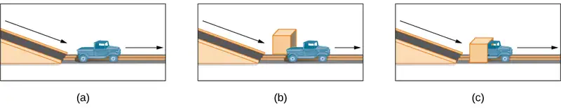
Just as there are physical milestones that we expect children to reach, there are also cognitive milestones. It is helpful to be aware of these milestones as children gain new abilities to think, problem solve, and communicate. For example, infants shake their head “no” around 6–9 months, and they respond to verbal requests to do things like “wave bye-bye” or “blow a kiss” around 9–12 months. Remember Piaget’s ideas about object permanence? We can expect children to grasp the concept that objects continue to exist even when they are not in sight by around 8 months old. Because toddlers (i.e., 12–24 months old) have mastered object permanence, they enjoy games like hide and seek, and they realize that when someone leaves the room they will come back (Loop, 2013). Toddlers also point to pictures in books and look in appropriate places when you ask them to find objects.
Preschool-age children (i.e., 3–5 years old) also make steady progress in cognitive development. Not only can they count, name colors, and tell you their name and age, but they can also make some decisions on their own, such as choosing an outfit to wear. Preschool-age children understand basic time concepts and sequencing (e.g., before and after), and they can predict what will happen next in a story. They also begin to enjoy the use of humor in stories. Because they can think symbolically, they enjoy pretend play and inventing elaborate characters and scenarios. One of the most common examples of their cognitive growth is their blossoming curiosity. Preschool-age children love to ask “Why?”
An important cognitive change occurs in children this age. Recall that Piaget described 2–3 year olds as egocentric, meaning that they do not have an awareness of others’ points of view. Between 3 and 5 years old, children come to understand that people have thoughts, feelings, and beliefs that are different from their own. This is known as theory-of-mind (TOM). Children can use this skill to tease others, persuade their parents to purchase a candy bar, or understand why a sibling might be angry. When children develop TOM, they can recognize that others have false beliefs (Dennett, 1987; Callaghan et al., 2005).
Link to Learning
False-belief tasks are useful in determining a child’s acquisition of theory-of-mind (TOM). Take a look at this video clip that shows a false belief task involving a box of crayons to learn more.
Cognitive skills continue to expand in middle and late childhood (6–11 years old). Thought processes become more logical and organized when dealing with concrete information (Figure 9.12). Children at this age understand concepts such as the past, present, and future, giving them the ability to plan and work toward goals. Additionally, they can process complex ideas such as addition and subtraction and cause-and-effect relationships. However, children’s attention spans tend to be very limited until they are around 11 years old. After that point, it begins to improve through adulthood.
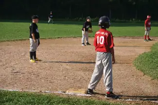
One well-researched aspect of cognitive development is language acquisition. As mentioned earlier, the order in which children learn language structures is consistent across children and cultures (Hatch, 1983). You’ve also learned that some psychological researchers have proposed that children possess a biological predisposition for language acquisition.
Starting before birth, babies begin to develop language and communication skills. At birth, babies apparently recognize their mother’s voice and can discriminate between the language(s) spoken by their mothers and foreign languages, and they show preferences for faces that are moving in synchrony with audible language (Blossom & Morgan, 2006; Pickens, 1994; Spelke & Cortelyou, 1981).
Children communicate information through gesturing long before they speak, and there is some evidence that gesture usage predicts subsequent language development (Iverson & Goldin-Meadow, 2005). In terms of producing spoken language, babies begin to coo almost immediately. Cooing is a one-syllable combination of a consonant and a vowel sound (e.g., coo or ba). Interestingly, babies replicate sounds from their own languages. A baby whose parents speak French will coo in a different tone than a baby whose parents speak Spanish or Urdu. After cooing, the baby starts to babble. Babbling begins with repeating a syllable, such as ma-ma, da-da, or ba-ba. When babies are about 12 months old, we expect them to say their first word for meaning, and to start combining words for meaning at about 18 months.
At about 2 years old, a toddler uses between 50 and 200 words; by 3 years old they have a vocabulary of up to 1,000 words and can speak in sentences. During the early childhood years, children's vocabulary increases at a rapid pace. This is sometimes referred to as the “vocabulary spurt” and has been claimed to involve an expansion in vocabulary at a rate of 10–20 new words per week. Recent research may indicate that while some children experience these spurts, it is far from universal (as discussed in Ganger & Brent, 2004). It has been estimated that 5 year olds understand about 6,000 words, speak 2,000 words, and can define words and question their meanings. They can rhyme and name the days of the week. Seven year olds speak fluently and use slang and clichés (Stork & Widdowson, 1974).
What accounts for such dramatic language learning by children? Behaviorist B. F. Skinner thought that we learn language in response to reinforcement or feedback, such as through parental approval or through being understood. For example, when a two-year-old child asks for juice, he might say, “me juice,” to which his mother might respond by giving him a cup of apple juice. Noam Chomsky (1957) criticized Skinner’s theory and proposed that we are all born with an innate capacity to learn language. Chomsky called this mechanism a language acquisition device (LAD). Who is correct? Both Chomsky and Skinner are right. Remember that we are a product of both nature and nurture. Researchers now believe that language acquisition is partially inborn and partially learned through our interactions with our linguistic environment (Gleitman & Newport, 1995; Stork & Widdowson, 1974).
Attachment¶
Psychosocial development occurs as children form relationships, interact with others, and understand and manage their feelings. In social and emotional development, forming healthy attachments is very important and is the major social milestone of infancy. Attachment is a long-standing connection or bond with others. Developmental psychologists are interested in how infants reach this milestone. They ask such questions as: How do parent and infant attachment bonds form? How does neglect affect these bonds? What accounts for children’s attachment differences?
Researchers Harry Harlow, John Bowlby, and Mary Ainsworth conducted studies designed to answer these questions. In the 1950s, Harlow conducted a series of experiments on monkeys. He separated newborn monkeys from their mothers. Each monkey was presented with two surrogate mothers. One surrogate monkey was made out of wire mesh, and she could dispense milk. The other monkey was softer and made from cloth: This monkey did not dispense milk. Research shows that the monkeys preferred the soft, cuddly cloth monkey, even though she did not provide any nourishment. The baby monkeys spent their time clinging to the cloth monkey and only went to the wire monkey when they needed to be fed. Prior to this study, the medical and scientific communities generally thought that babies become attached to the people who provide their nourishment. However, Harlow (1958) concluded that there was more to the mother-child bond than nourishment. Feelings of comfort and security are the critical components to maternal-infant bonding, which leads to healthy psychosocial development.
Link to Learning
Harlow’s studies of monkeys were performed before modern ethics guidelines were in place, and today his experiments are widely considered to be unethical and even cruel. Watch this video of actual footage of Harlow's monkey studies to learn more.
Building on the work of Harlow and others, John Bowlby developed the concept of attachment theory. He defined attachment as the affectional bond or tie that an infant forms with the mother (Bowlby, 1969). An infant must form this bond with a primary caregiver in order to have normal social and emotional development. In addition, Bowlby proposed that this attachment bond is very powerful and continues throughout life. He used the concept of secure base to define a healthy attachment between parent and child (1988). A secure base is a parental presence that gives the child a sense of safety as he explores his surroundings. Bowlby said that two things are needed for a healthy attachment: The caregiver must be responsive to the child’s physical, social, and emotional needs; and the caregiver and child must engage in mutually enjoyable interactions (Bowlby, 1969) (Figure 9.13).
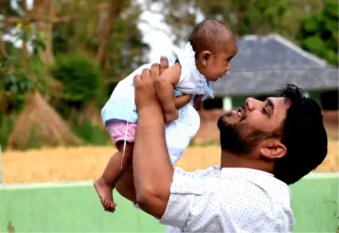
While Bowlby thought attachment was an all-or-nothing process, Mary Ainsworth’s (1970) research showed otherwise. Ainsworth wanted to know if children differ in the ways they bond, and if so, why. To find the answers, she used the Strange Situation procedure to study attachment between mothers and their infants (1970). In the Strange Situation, the mother (or primary caregiver) and the infant (age 12-18 months) are placed in a room together. There are toys in the room, and the caregiver and child spend some time alone in the room. After the child has had time to explore her surroundings, a stranger enters the room. The mother then leaves her baby with the stranger. After a few minutes, she returns to comfort her child.
Based on how the infants/toddlers responded to the separation and reunion, Ainsworth identified three types of parent-child attachments: secure, avoidant, and resistant (Ainsworth & Bell, 1970). A fourth style, known as disorganized attachment, was later described (Main & Solomon, 1990). The most common type of attachment—also considered the healthiest—is called secure attachment (Figure 9.14). In this type of attachment, the toddler prefers his parent over a stranger. The attachment figure is used as a secure base to explore the environment and is sought out in times of stress. Securely attached children were distressed when their caregivers left the room in the Strange Situation experiment, but when their caregivers returned, the securely attached children were happy to see them. Securely attached children have caregivers who are sensitive and responsive to their needs.
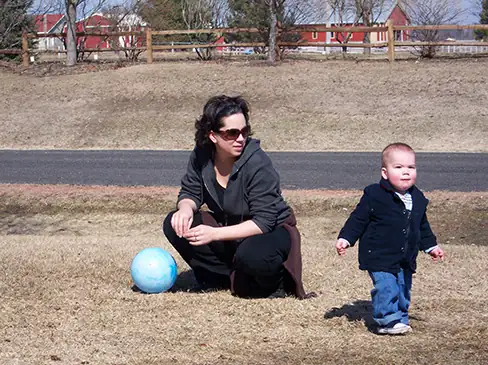
With avoidant attachment, the child is unresponsive to the parent, does not use the parent as a secure base, and does not care if the parent leaves. The toddler reacts to the parent the same way she reacts to a stranger. When the parent does return, the child is slow to show a positive reaction. Ainsworth theorized that these children were most likely to have a caregiver who was insensitive and inattentive to their needs (Ainsworth, Blehar, Waters, & Wall, 1978).
In cases of resistant attachment, children tend to show clingy behavior, but then they reject the attachment figure’s attempts to interact with them (Ainsworth & Bell, 1970). These children do not explore the toys in the room, as they are too fearful. During separation in the Strange Situation, they became extremely disturbed and angry with the parent. When the parent returns, the children are difficult to comfort. Resistant attachment is the result of the caregivers’ inconsistent level of response to their child.
Finally, children with disorganized attachment behaved oddly in the Strange Situation. They freeze, run around the room in an erratic manner, or try to run away when the caregiver returns (Main & Solomon, 1990). This type of attachment is seen most often in kids who have been abused. Research has shown that abuse disrupts a child’s ability to regulate their emotions.
While Ainsworth’s research has found support in subsequent studies, it has also met criticism. Some researchers have pointed out that a child’s temperament may have a strong influence on attachment (Gervai, 2009; Harris, 2009), and others have noted that attachment varies from culture to culture, a factor not accounted for in Ainsworth’s research (Rothbaum, Weisz, Pott, Miyake, & Morelli, 2000; van Ijzendoorn & Sagi-Schwartz, 2008).
Link to Learning
Watch this video clip of the Strange Situation and try to identify which type of attachment baby Lisa exhibits.
Self-Concept¶
Just as attachment is the main psychosocial milestone of infancy, the primary psychosocial milestone of childhood is the development of a positive sense of self. How does self-awareness develop? Infants don’t have a self-concept, which is an understanding of who they are. If you place a baby in front of a mirror, they will reach out to touch their image, thinking it is another baby. However, by about 18 months a toddler will recognize that the person in the mirror is themself. How do we know this? In a well-known experiment, a researcher placed a red dot of paint on children’s noses before putting them in front of a mirror (Amsterdam, 1972). Commonly known as the mirror test, this behavior is demonstrated by humans and a few other species and is considered evidence of self-recognition (Archer, 1992). At 18 months old they would touch their own noses when they saw the paint, surprised to see a spot on their faces. By 24–36 months old children can name and/or point to themselves in pictures, clearly indicating self-recognition.
Children from 2–4 years old display a great increase in social behavior once they have established a self-concept. They enjoy playing with other children, but they have difficulty sharing their possessions. Also, through play children explore and come to understand their gender roles and can label themselves as a girl or boy (Chick, Heilman-Houser, & Hunter, 2002). By 4 years old, children can cooperate with other children, share when asked, and separate from parents with little anxiety. Children at this age also exhibit autonomy, initiate tasks, and carry out plans. Success in these areas contributes to a positive sense of self. Once children reach 6 years old, they can identify themselves in terms of group memberships: “I’m a first grader!” School-age children compare themselves to their peers and discover that they are competent in some areas and less so in others (recall Erikson’s task of industry versus inferiority). At this age, children recognize their own personality traits as well as some other traits they would like to have. For example, 10-year-old Layla says, “I’m kind of shy. I wish I could be more talkative like my friend Alexa.”
Development of a positive self-concept is important to healthy development. Children with a positive self-concept tend to be more confident, do better in school, act more independently, and are more willing to try new activities (Maccoby, 1980; Ferrer & Fugate, 2003). Formation of a positive self-concept begins in Erikson’s toddlerhood stage, when children establish autonomy and become confident in their abilities. Development of self-concept continues in elementary school, when children compare themselves to others. When the comparison is favorable, children feel a sense of competence and are motivated to work harder and accomplish more. Self-concept is re-evaluated in Erikson’s adolescence stage, as teens form an identity. They internalize the messages they have received regarding their strengths and weaknesses, keeping some messages and rejecting others. Adolescents who have achieved identity formation are capable of contributing positively to society (Erikson, 1968).
Dig Deeper: Phenomenological Variant of Ecological Systems Theory (PVEST)
Kenneth and Mamie Clark were pioneering psychologists responsible for the first psychological study used in a Supreme Court case. Their research with African American children and doll choices was used to highlight the harmful effects of segregation and provided support for the Browns and the NAACP in their lawsuit against the Board of Education. The finding that African American children were more likely to choose a White doll over a Black doll, in both northern and southern states, led them to theorize that the children did not have a healthy concept of themselves (Clark & Clark, 1950).
The Clarks’ research differed from that of Inez Beverly Prosser, who also studied African American children in segregated and integrated schools in Cincinnati. Parents could choose either environment for their children during the 1930s. She found, among other factors, that the self-concept of children at segregated schools was more positive versus those in integrated schools, partly due to teachers’ low expectations. Prosser also noted that the child’s personality should be considered when choosing a segregated school or an integrated school (Benjamin, Henry, & McMahon, 2005).
Later researchers suggested that African American children choosing a doll that did not look like them was not an indication of their self-esteem or their self-image. For instance, Rogers and Meltzoff (2017) found that gender identity was more important than race in their study of diverse children whose average age was about 10 years old. Thus, for children that young, the meaning of race is an evolving process, as opposed to adolescents’ search for identity. The ethnic minority children in the study did view racial identity as important, compared to their White counterparts.
For teenagers who are members of ethnic minority groups, racial/ethnic/cultural identity can be paramount, depending on the family’s processes. Racial socialization involves teaching them the positive aspects of their in-group, usually by caregivers. Most of the students in a study by Neblett, Smalls, Ford, Nguyen, and Sellers (2009) reported having received such messages but a few received no racial socialization messages. They found that these messages played a role in how they felt about their in-group.
Some theories have been developed to explain the behaviors of ethnic minority youth. One such theory is the Phenomenological Variant of Ecological Systems Theory (PVEST), put forth by Margaret Beale Spencer. It is a merging of phenomenology and Bronfenbrenner’s ecological systems theory. A phenomenological approach is based on how a person makes meaning of their experiences. For example, young African American boys have different experiences in educational settings compared to African American girls. Consequently, the meaning they assign to those experiences differs. Bronfenbrenner’s ecological systems theory suggests that development occurs based on interactions among environments such as school, family, and community (Bronfenbrenner, 1977).
The research that Spencer, Dupree, and Hartmann (1997) conducted with African American adolescent boys and girls was explained by PVEST. They found that negative learning attitudes were predicted by unpopularity with peers for girls and boys. Additionally, for boys, more stress predicted a less negative attitude toward learning, possibly due to focus on the school environment instead of on personal issues. This occurred along with perceiving that teachers had positive expectations of African American boys. The researchers surmised that PVEST accounted for how others’ perceptions and their subsequent attitudes were related and worked both ways.
What can parents do to nurture a healthy self-concept? Diana Baumrind (1971, 1991) proposed that parenting style may be a factor. The way we parent is an important factor in a child’s socioemotional growth. Baumrind developed and refined a theory describing four parenting styles: authoritative, authoritarian, permissive, and uninvolved. With the authoritative style, the parent gives reasonable demands and consistent limits, expresses warmth and affection, and listens to the child’s point of view. Parents set rules and explain the reasons behind them. They are also flexible and willing to make exceptions to the rules in certain cases—for example, temporarily relaxing bedtime rules to allow for a nighttime swim during a family vacation. Of the four parenting styles, the authoritative style is the one that is most encouraged in modern American society. American children raised by authoritative parents tend to have high self-esteem and social skills. However, effective parenting styles vary as a function of culture and, as Small (1999) points out, the authoritative style is not necessarily preferred or appropriate in all cultures.
In authoritarian style, the parent places high value on conformity and obedience. The parents are often strict, tightly monitor their children, and express little warmth. In contrast to the authoritative style, authoritarian parents probably would not relax bedtime rules during a vacation because they consider the rules to be set, and they expect obedience. This style can create anxious, withdrawn, and unhappy kids. However, it is important to point out that authoritarian parenting is as beneficial as the authoritative style in some ethnic groups (Russell, Crockett, & Chao, 2010). For instance, first-generation Chinese American children raised by authoritarian parents did just as well in school as their peers who were raised by authoritative parents (Russell et al., 2010).
For parents who employ the permissive style of parenting, the kids run the show and anything goes. Permissive parents make few demands and rarely use punishment. They tend to be very nurturing and loving, and may play the role of friend rather than parent. In terms of our example of vacation bedtimes, permissive parents might not have bedtime rules at all—instead they allow the child to choose their bedtime whether on vacation or not. Not surprisingly, children raised by permissive parents tend to lack self-discipline, and the permissive parenting style is negatively associated with grades (Dornbusch, Ritter, Leiderman, Roberts, & Fraleigh, 1987). The permissive style may also contribute to other risky behaviors such as alcohol abuse (Bahr & Hoffman, 2010), risky sexual behavior especially among female children (Donenberg, Wilson, Emerson, & Bryant, 2002), and increased display of disruptive behaviors by male children (Parent et al., 2011). However, there are some positive outcomes associated with children raised by permissive parents. They tend to have higher self-esteem, better social skills, and report lower levels of depression (Darling, 1999).
With the uninvolved style of parenting, the parents are indifferent, uninvolved, and sometimes referred to as neglectful. They don’t respond to the child’s needs and make relatively few demands. This could be because of severe depression or substance abuse, or other factors such as the parents’ extreme focus on work. These parents may provide for the child’s basic needs, but little else. The children raised in this parenting style are usually emotionally withdrawn, fearful, anxious, perform poorly in school, and are at an increased risk of substance abuse (Darling, 1999).
As you can see, parenting styles influence childhood adjustment, but could a child’s temperament likewise influence parenting? Temperament refers to innate traits that influence how one thinks, behaves, and reacts with the environment. Children with easy temperaments demonstrate positive emotions, adapt well to change, and are capable of regulating their emotions. Conversely, children with difficult temperaments demonstrate negative emotions and have difficulty adapting to change and regulating their emotions. Difficult children are much more likely to challenge parents, teachers, and other caregivers (Thomas, 1984). Therefore, it’s possible that easy children (i.e., social, adaptable, and easy to soothe) tend to elicit warm and responsive parenting, while demanding, irritable, withdrawn children evoke irritation in their parents or cause their parents to withdraw (Sanson & Rothbart, 1995).
Everyday Connection: The Importance of Play and Recess
According to the American Academy of Pediatrics (2007), unstructured play is an integral part of a child’s development. It builds creativity, problem solving skills, and social relationships. Play also allows children to develop a theory-of-mind as they imaginatively take on the perspective of others.
Outdoor play allows children the opportunity to directly experience and sense the world around them. While doing so, they may collect objects that they come across and develop lifelong interests and hobbies. They also benefit from increased exercise, and engaging in outdoor play can actually increase how much they enjoy physical activity. This helps support the development of a healthy heart and brain. Unfortunately, research suggests that today’s children are engaging in less and less outdoor play (Clements, 2004). Perhaps, it is no surprise to learn that lowered levels of physical activity in conjunction with easy access to calorie-dense foods with little nutritional value are contributing to alarming levels of childhood obesity (Karnik & Kanekar, 2012).
Despite the adverse consequences associated with reduced play, some children are over scheduled and have little free time to engage in unstructured play. In addition, some schools have taken away recess time for children in a push for students to do better on standardized tests, and many schools commonly use loss of recess as a form of punishment. Do you agree with these practices? Why or why not?
Adolescence¶
Adolescence is a socially constructed concept. In pre-industrial society, children were considered adults when they reached physical maturity, but today we have an extended time between childhood and adulthood called adolescence. Adolescence is the period of development that begins at puberty and ends at emerging adulthood, which is discussed later. In the United States, adolescence is seen as a time to develop independence from parents while remaining connected to them (Figure 9.15). The typical age range of adolescence is from 12 to 18 years, and this stage of development also has some predictable physical, cognitive, and psychosocial milestones.
Physical Development¶
As noted above, adolescence begins with puberty. While the sequence of physical changes in puberty is predictable, the onset and pace of puberty vary widely. Several physical changes occur during puberty, such as adrenarche and gonadarche, the maturing of the adrenal glands and sex glands, respectively. Also during this time, primary and secondary sexual characteristics develop and mature. Primary sexual characteristics are organs specifically needed for reproduction, like the uterus and ovaries and testes. Secondary sexual characteristics are physical signs of sexual maturation that do not directly involve sex organs, such as development of breasts and hips, and development of facial hair and a deepened voice. Menarche, the beginning of menstrual periods, usually occurs around 12–13 years old, and spermarche, the first ejaculation, around 13–14 years old.
During puberty, people experience a rapid increase in height (i.e., growth spurt). For females this begins between 8 and 13 years old, with adult height reached between 10 and 16 years old. Males begin their growth spurt slightly later, usually between 10 and 16 years old, and reach their adult height between 13 and 17 years old. Both nature (i.e., genes) and nurture (e.g., nutrition, medications, and medical conditions) can influence height.
Because rates of physical development vary so widely among teenagers, puberty can be a source of pride or embarrassment. Early maturing boys tend to be stronger, taller, and more athletic than their later maturing peers. They are usually more popular, confident, and independent, but they are also at a greater risk for substance abuse and early sexual activity (Flannery, Rowe, & Gulley, 1993; Kaltiala-Heino, Rimpela, Rissanen, & Rantanen, 2001). Early maturing girls may be teased or overtly admired, which can cause them to feel self-conscious about their developing bodies. These girls are at a higher risk for depression, substance abuse, and eating disorders (Ge, Conger, & Elder, 2001; Graber, Lewinsohn, Seeley, & Brooks-Gunn, 1997; Striegel-Moore & Cachelin, 1999). Late blooming boys and girls (i.e., they develop more slowly than their peers) may feel self-conscious about their lack of physical development. Negative feelings are particularly a problem for late maturing boys, who are at a higher risk for depression and conflict with parents (Graber et al., 1997) and more likely to be bullied (Pollack & Shuster, 2000).
Psychologists and clinicians also study the impact of gender identity and the impacts of puberty on transgender and gender-nonconforming youth. This is a relatively recent area of study, and the impacts should not be over-generalized. However, the research seems to indicate that transgender and gender-nonconforming youth who are supported in their identity do not have significantly higher incidences of depression or anxiety symptoms when compared to control groups, while those who are not supported exhibit more symptoms and risk factors (Olson, Durwood, & McLaughlin, 2016). Expression and exploration of gender identity can take many forms and manifest at different times depending on a wide array of factors.
The adolescent brain also remains under development. Up until puberty, brain cells continue to bloom in the frontal region. Adolescents engage in increased risk-taking behaviors and emotional outbursts possibly because the frontal lobes of their brains are still developing (Figure 9.16). Recall that this area is responsible for judgment, impulse control, and planning, and it is still maturing into early adulthood (Casey, Tottenham, Liston, & Durston, 2005).
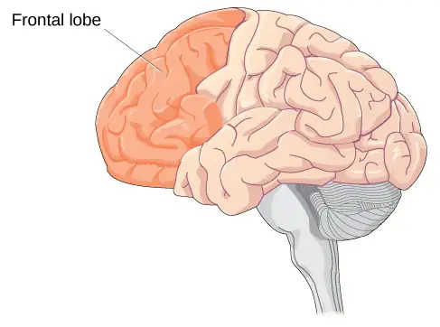
Link to Learning
According to neuroscientist Jay Giedd in the Frontline video “Inside the Teenage Brain” (2013), “It’s sort of unfair to expect [teens] to have adult levels of organizational skills or decision-making before their brains are finished being built.” Watch this segment on “The Wiring of the Adolescent Brain” to find out more about the developing brain during adolescence.
Cognitive Development¶
More complex thinking abilities emerge during adolescence. Some researchers suggest this is due to increases in processing speed and efficiency rather than as the result of an increase in mental capacity—in other words, due to improvements in existing skills rather than development of new ones (Bjorkland, 1987; Case, 1985). During adolescence, teenagers move beyond concrete thinking and become capable of abstract thought. Recall that Piaget refers to this stage as formal operational thought. Teen thinking is also characterized by the ability to consider multiple points of view, imagine hypothetical situations, debate ideas and opinions (e.g., politics, religion, and justice), and form new ideas (Figure 9.17). In addition, it’s not uncommon for adolescents to question authority or challenge established societal norms.
Cognitive empathy, also known as theory-of-mind (which we discussed earlier with regard to egocentrism), relates to the ability to take the perspective of others and feel concern for others (Shamay-Tsoory, Tomer, & Aharon-Peretz, 2005). Cognitive empathy begins to increase in adolescence and is an important component of social problem solving and conflict avoidance. According to one longitudinal study, levels of cognitive empathy begin rising in girls around 13 years old, and around 15 years old in boys (Van der Graaff et al., 2013). Teens who reported having supportive fathers with whom they could discuss their worries were found to be better able to take the perspective of others (Miklikowska, Duriez, & Soenens, 2011).
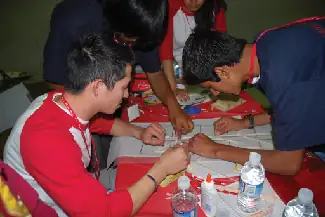
Psychosocial Development¶
Adolescents continue to refine their sense of self as they relate to others. Erikson referred to the task of the adolescent as one of identity versus role confusion. Thus, in Erikson’s view, an adolescent’s main questions are “Who am I?” and “Who do I want to be?” Some adolescents adopt the values and roles that their parents expect for them. Other teens develop identities that are in opposition to their parents but align with a peer group. This is common as peer relationships become a central focus in adolescents’ lives.
As adolescents work to form their identities, they pull away from their parents, and the peer group becomes very important (Shanahan, McHale, Osgood, & Crouter, 2007). Despite spending less time with their parents, most teens report positive feelings toward them (Moore, Guzman, Hair, Lippman, & Garrett, 2004). Warm and healthy parent-child relationships have been associated with positive child outcomes, such as better grades and fewer school behavior problems, in the United States as well as in other countries (Hair et al., 2005).
It appears that most teens don’t experience adolescent storm and stress to the degree once famously suggested by G. Stanley Hall, a pioneer in the study of adolescent development. Only small numbers of teens have major conflicts with their parents (Steinberg & Morris, 2001), and most disagreements are minor. For example, in a study of over 1,800 parents of adolescents from various cultural and ethnic groups, Barber (1994) found that conflicts occurred over day-to-day issues such as homework, money, curfews, clothing, chores, and friends. These types of arguments tend to decrease as teens develop (Galambos & Almeida, 1992). There is emerging research on the adolescent brain. Galvan, Hare, Voss, Glover and Casey (2007) examined its role in risk-taking behavior. They used fMRI to assess the readings’ relationship to risk-taking, risk perception, and impulsivity. The researchers found that there was no correlation between brain activity in the neural reward center and impulsivity and risk perception. However, activity in that part of the brain was correlated to risk taking. In other words, risk-taking adolescents experienced brain activity in the reward center. The idea that adolescents, however, are more impulsive than other demographics was challenged in their research, which included children and adults.
Emerging Adulthood¶
The next stage of development is emerging adulthood. This is a relatively newly defined period of lifespan development spanning from 18 years old to the mid-20s, characterized as an in-between time where identity exploration is focused on work and love.
When does a person become an adult? There are many ways to answer this question. In the United States, you are legally considered an adult at 18 years old. But other definitions of adulthood vary widely; in sociology, for example, a person may be considered an adult when they become self-supporting, choose a career, get married, or start a family. The ages at which we achieve these milestones vary from person to person as well as from culture to culture. For example, in the African country of Malawi, 15-year-old Njemile was married at 14 years old and had her first child at 15 years old. In her culture she is considered an adult. Children in Malawi take on adult responsibilities such as marriage and work (e.g., carrying water, tending babies, and working fields) as early as 10 years old. In stark contrast, independence in Western cultures is taking longer and longer, effectively delaying the onset of adult life.
What factors are leading to these changes regarding financial and familial independence? It seems that emerging adulthood is a product of both Western culture and our current times (Arnett, 2000). People in higher income and more industrialized countries are living longer, allowing the freedom to take an extra decade to start a career and family. Changes in the workforce also play a role. For example, 50 years ago, a young adult with a high school diploma could immediately enter the work force and climb the economic ladder. That is no longer the case. Bachelor’s and even graduate degrees are required more and more often—even for entry-level jobs (Arnett, 2000). In addition, many students are taking longer (five or six years) to complete a college degree as a result of working and going to school at the same time. After graduation, many young adults return to the family home because they have difficulty finding a job. The term Boomerang Generation describes recent college graduates for whom lack of adequate employment upon college graduation often leads to a return to the parental home (Davidson, 2014). Changing cultural expectations may be the most important reason for the delay in entering adult roles. Young people are spending more time exploring their options, so they are delaying marriage and work as they change majors and jobs multiple times, putting them on a much later timetable than their parents (Arnett, 2000).
Adulthood¶
Adulthood begins around 20 years old and has three distinct stages: early, middle, and late. Each stage brings its own set of rewards and challenges.
Physical Development¶
By the time we reach early adulthood (20 to early 40s), our physical maturation is complete, although our height and weight may increase slightly. In young adulthood, our physical abilities are at their peak, including muscle strength, reaction time, sensory abilities, and cardiac functioning. Most professional athletes are at the top of their game during this stage. People often carry and give birth to children in the young adulthood years, so they may see additional weight gain and breast changes.
Middle adulthood extends from the 40s to the 60s (Figure 9.18). Physical decline is gradual. The skin loses some elasticity, and wrinkles are among the first signs of aging. Visual acuity decreases during this time. Fertility gradually declines with the approach to the onset of menopause, the end of the menstrual cycle, around 50 years old. Middle adulthood tends toward weight gain: in the abdominal area for men and in the hips and thighs for women. Hair begins to thin and turn gray.
Late adulthood is considered to extend from the 60s on. This is the last stage of physical change. The skin continues to lose elasticity, reaction time slows further, and muscle strength diminishes. Smell, taste, hearing, and vision, so sharp in our twenties, decline significantly. The brain may also no longer function at optimal levels, leading to problems like memory loss, dementia, and Alzheimer’s disease in later years.
Link to Learning
Aging doesn’t mean a person can’t explore new pursuits, learn new skills, and continue to grow. Watch this inspiring story about Neil Unger who is a newbie to the world of skateboarding at 60 years old to learn more.
Cognitive Development¶
Because we spend so many years in adulthood (more than any other stage), cognitive changes are numerous. In fact, research suggests that adult cognitive development is a complex, ever changing process that may be even more active than cognitive development in infancy and early childhood (Fischer, Yan, & Stewart, 2003).
Link to Learning
There is good news for the middle age brain. View this brief video about the middle age brain to find out what it is.
Unlike our physical abilities, which peak in our mid-20s and then begin a slow decline, our cognitive abilities remain steady throughout early and middle adulthood. Our crystallized intelligence (information, skills, and strategies we have gathered through a lifetime of experience) tends to hold steady as we age—it may even improve. For example, adults show relatively stable to increasing scores on intelligence tests until their mid-30s to mid-50s (Bayley & Oden, 1955). However, in late adulthood we begin to experience a decline in another area of our cognitive abilities—fluid intelligence (information processing abilities, reasoning, and memory). These processes become slower. How can we delay the onset of cognitive decline? Mental and physical activity seems to play a part (Figure 9.19). Research has found adults who engage in mentally and physically stimulating activities experience less cognitive decline and have a reduced incidence of mild cognitive impairment and dementia (Hertzog, Kramer, Wilson, & Lindenberger, 2009; Larson et al., 2006; Podewils et al., 2005).
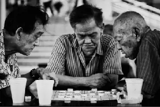
Researchers have examined the aging brain by comparing it to brain functioning in younger people. Forstmann and colleagues (2011) compared elderly participants to younger participants, who in the study were asked to report the direction of movement of a set of dots. They were given feedback regarding speed and accuracy. The researchers found that older participants made more errors and were slower due to degeneration of corticostriatal connections. In other words, the decreased ability typically assigned to elderly people may be due to circumstances in the brain beyond their control. Interestingly, other researchers have found similarities in spatial representations when comparing children aged 6–7 to those over the age of 80. Ruggiero, D’Errico, and Iachini (2016) reported that this is due to neurodegeneration in older adults and immature neurology in young children.
Many elderly people experience dementia, changes in the brain that negatively affect cognition. Alzheimer’s disease is one type of dementia, initially studied by medical researcher Solomon Carter Fuller. Alzheimer’s disease has a genetic basis. Plaques in the brain are due to cell death, which then causes those affected with the disease severe forgetfulness. A person can forget how to walk, talk, and eventually eat. The disease can be mitigated by assessing environmental factors (exposure to lead, iron, and zinc increase risk) and nutritional factors (the Mediterranean diet lowers risk) (Arora, Mittal, & Kakkar, 2015). Although there is no cure, there is hope. Cognitive rehabilitation can offset mild cognitive impairment, as it can evolve into dementia. Garcia-Betances, Jimenez-Mixco, Arredondo, and Cabrera-Umpierrez (2015) examined the use of virtual reality as a possible cognitive rehabilitative method. They suggested that virtual reality technology should involve daily living activities, memory, and language, among other considerations.
Psychosocial Development¶
There are many theories about the social and emotional aspects of aging. Some aspects of healthy aging include activities, social connectedness, and the role of a person’s culture. According to many theorists, including George Vaillant (2002), who studied and analyzed over 50 years of data, we need to have and continue to find meaning throughout our lives. For those in early and middle adulthood, meaning is found through work (Sterns & Huyck, 2001) and family life (Markus, Ryff, Curan, & Palmersheim, 2004). These areas relate to the tasks that Erikson referred to as generativity and intimacy. As mentioned previously, adults tend to define themselves by what they do—their careers. Earnings peak during this time, yet job satisfaction is more closely tied to work that involves contact with other people, is interesting, provides opportunities for advancement, and allows some independence (Mohr & Zoghi, 2006) than it is to salary (Iyengar, Wells, & Schwartz, 2006). How might being unemployed or being in a dead-end job challenge adult well-being?
Positive relationships with significant others in our adult years have been found to contribute to a state of well-being (Ryff & Singer, 2009). Most adults in the United States identify themselves through their relationships with family—particularly with spouses, children, and parents (Markus et al., 2004). While raising children can be stressful, especially when they are young, research suggests that parents reap the rewards down the road, as adult children tend to have a positive effect on parental well-being (Umberson, Pudrovska, & Reczek, 2010). Having a stable marriage has also been found to contribute to well-being throughout adulthood (Vaillant, 2002).
Another aspect of positive aging is believed to be social connectedness and social support. As we get older, socioemotional selectivity theory suggests that our social support and friendships dwindle in number, but remain as close, if not more close than in our earlier years (Carstensen, 1992) (Figure 9.20).
Link to Learning
Read the poem “When I Am Old” by Jenny Joseph to see a humorous and heartfelt approach to aging.
Link to Learning
View this video about aging in America to learn more.
9.4 Death and Dying¶
Learning Objectives
By the end of this section, you will be able to:
- Discuss hospice care
- Describe the five stages of grief
- Critique issues regarding living wills, Do Not Resuscitate (DNR) orders, and hospice care
Every story has an ending. Death marks the end of your life story (Figure 9.21). Our culture and individual backgrounds influence how we view death. In some cultures, death is accepted as a natural part of life and is embraced. In contrast, until about 50 years ago in the United States, a doctor might not inform someone that they were dying, and the majority of deaths occurred in hospitals. In 1967 that reality began to change with Cicely Saunders, who created the first modern hospice in England. The aim of hospice is to help provide a death with dignity and pain management in a humane and comfortable environment, which is usually outside of a hospital setting. In 1974, Florence Wald founded the first hospice in the United States. Today, hospice provides care for 1.65 million Americans and their families. Because of hospice care, many terminally ill people are able to spend their last days at home.
Research has indicated that hospice care is beneficial for the patient (Brumley, Enquidanos, & Cherin, 2003; Brumley et al., 2007; Godkin, Krant, & Doster, 1984) and for the patient’s family (Rhodes, Mitchell, Miller, Connor, & Teno, 2008; Godkin et al., 1984). Hospice patients report high levels of satisfaction with hospice care because they are able to remain at home and are not completely dependent on strangers for care (Brumley et al., 2007). In addition, hospice patients tend to live longer than non-hospice patients (Connor, Pyenson, Fitch, Spence, & Iwasaki, 2007; Temel et al., 2010). Family members receive emotional support and are regularly informed of their loved one’s treatment and condition. The family member’s burden of care is also reduced (McMillan et al., 2006). Both the patient and the patient’s family members report increased family support, increased social support, and improved coping while receiving hospice services (Godkin et al., 1984).
How do you think you might react if you were diagnosed with a terminal illness like cancer? Elizabeth Kübler-Ross (1969), who worked with the founders of hospice care, described the process of an individual accepting his own death. She proposed five stages of grief: denial, anger, bargaining, depression, and acceptance. Most individuals experience these stages, but the stages may occur in different orders, depending on the individual. In addition, not all people experience all of the stages. It is also important to note that some psychologists believe that the more a dying person fights death, the more likely they are to remain stuck in the denial phase. This could make it difficult for the dying person to face death with dignity. However, other psychologists believe that not facing death until the very end is an adaptive coping mechanism for some people.
Whether due to illness or old age, not everyone facing death or the loss of a loved one experiences the negative emotions outlined in the Kübler-Ross model (Nolen-Hoeksema & Larson, 1999). For example, research suggests that people with religious or spiritual beliefs are better able to cope with death because of their hope in an afterlife and because of social support from religious or spiritual associations (Hood, Spilka, Hunsberger, & Corsuch, 1996; McIntosh, Silver, & Wortman, 1993; Paloutzian, 1996; Samarel, 1991; Wortman & Park, 2008).
A prominent example of a person creating meaning through death is Randy Pausch, who was a well-loved and respected professor at Carnegie Mellon University. Diagnosed with terminal pancreatic cancer in his mid-40s and given only 3–6 months to live, Pausch focused on living in a fulfilling way in the time he had left. Instead of becoming angry and depressed, he presented his now famous last lecture called “Really Achieving Your Childhood Dreams.” In his moving, yet humorous talk, he shares his insights on seeing the good in others, overcoming obstacles, and experiencing zero gravity, among many other things. Despite his terminal diagnosis, Pausch lived the final year of his life with joy and hope, showing us that our plans for the future still matter, even if we know that we are dying.
Link to Learning
Listen to Randy Pausch's last lecture titled Really Achieving Your Childhood Dreams to learn more.
As individuals become more knowledgeable about medical procedures and practices, some people want to ensure that their wishes and desires are known in advance. This ensures that if the person ever becomes incapacitated or can no longer express themselves, their loved ones will know what they want. For this reason, a person might write a living will or advance directive, which is a written legal document that details specific interventions a person wants. For example, a person in the last stages of a terminal illness may not want to receive life-extending treatments. A person may also include a Do Not Resuscitate (DNR) Order, which they would share with family and close friends. A DNR Order states that if a person stops breathing or their heart stops beating, medical personnel such as doctors and nurses are not to take steps to revive or resuscitate the patient. A living will can also include a health care proxy, which appoints a specific person to make medical decisions for you if you are unable to speak for yourself. People’s desire for living wills and DNRs are often influenced by their religion, culture, and upbringing.
Chapter Review¶
Key Terms¶
- accommodation
- adjustment of a schema by changing a scheme to accommodate new information different from what was already known
- adolescence
- period of development that begins at puberty and ends at early adulthood
- adrenarche
- maturing of the adrenal glands
- advance directive
- a written legal document that details specific interventions a person wants (see living will)
- assimilation
- adjustment of a schema by adding information similar to what is already known
- attachment
- long-standing connection or bond with others
- authoritarian parenting style
- parents place a high value on conformity and obedience, are often rigid, and express little warmth to the child
- authoritative parenting style
- parents give children reasonable demands and consistent limits, express warmth and affection, and listen to the child’s point of view
- avoidant attachment
- characterized by child’s unresponsiveness to parent, does not use the parent as a secure base, and does not care if parent leaves
- cognitive development
- domain of lifespan development that examines learning, attention, memory, language, thinking, reasoning, and creativity
- cognitive empathy
- ability to take the perspective of others and to feel concern for others
- conception
- when a sperm fertilizes an egg and forms a zygote
- concrete operational stage
- third stage in Piaget’s theory of cognitive development; from about 7 to 11 years old, children can think logically about real (concrete) events
- conservation
- idea that even if you change the appearance of something, it is still equal in size, volume, or number as long as nothing is added or removed
- continuous development
- view that development is a cumulative process: gradually improving on existing skills
- critical (sensitive) period
- time during fetal growth when specific parts or organs develop
- developmental milestone
- approximate ages at which children reach specific normative events
- discontinuous development
- view that development takes place in unique stages, which happen at specific times or ages
- disorganized attachment
- characterized by the child’s odd behavior when faced with the parent; type of attachment seen most often with kids that are abused
- do not resuscitate (DNR)
- a legal document stating that if a person stops breathing or their heart stops, medical personnel such as doctors and nurses are not to take steps to revive or resuscitate the patient
- egocentrism
- preoperational child’s difficulty in taking the perspective of others
- embryo
- multi-cellular organism in its early stages of development
- emerging adulthood
- newly defined period of lifespan development from 18 years old to the mid-20s; young people are taking longer to complete college, get a job, get married, and start a family
- fine motor skills
- use of muscles in fingers, toes, and eyes to coordinate small actions
- formal operational stage
- final stage in Piaget’s theory of cognitive development; from age 11 and up, children are able to deal with abstract ideas and hypothetical situations
- gonadarche
- maturing of the sex glands
- gross motor skills
- use of large muscle groups to control arms and legs for large body movements
- health care proxy
- a legal document that appoints a specific person to make medical decisions for a patient if they are unable to speak for themselves
- hospice
- service that provides a death with dignity; pain management in a humane and comfortable environment; usually outside of a hospital setting
- living will
- a written legal document that details specific interventions a person wants; may include health care proxy
- menarche
- beginning of menstrual period; around 12–13 years old
- mitosis
- process of cell division
- motor skills
- ability to move our body and manipulate objects
- nature
- genes and biology
- newborn reflexes
- inborn automatic response to a particular form of stimulation that all healthy babies are born with
- normative approach
- study of development using norms, or average ages, when most children reach specific developmental milestones
- nurture
- environment and culture
- object permanence
- idea that even if something is out of sight, it still exists
- permissive parenting style
- parents make few demands and rarely use punishment
- physical development
- domain of lifespan development that examines growth and changes in the body and brain, the senses, motor skills, and health and wellness
- placenta
- structure connected to the uterus that provides nourishment and oxygen to the developing baby
- prenatal care
- medical care during pregnancy that monitors the health of both the mother and the fetus
- preoperational stage
- second stage in Piaget’s theory of cognitive development; from ages 2 to 7, children learn to use symbols and language but do not understand mental operations and often think illogically
- primary sexual characteristics
- organs specifically needed for reproduction
- psychosexual development
- process proposed by Freud in which pleasure-seeking urges focus on different erogenous zones of the body as humans move through five stages of life
- psychosocial development
- domain of lifespan development that examines emotions, personality, and social relationships
- psychosocial development
- process proposed by Erikson in which social tasks are mastered as humans move through eight stages of life from infancy to adulthood
- resistant attachment
- characterized by the child’s tendency to show clingy behavior and rejection of the parent when they attempt to interact with the child
- reversibility
- principle that objects can be changed, but then returned back to their original form or condition
- schema
- (plural = schemata) concept (mental model) that is used to help us categorize and interpret information
- secondary sexual characteristics
- physical signs of sexual maturation that do not directly involve sex organs
- secure attachment
- characterized by the child using the parent as a secure base from which to explore
- secure base
- parental presence that gives the infant/toddler a sense of safety as they explore their surroundings
- sensorimotor stage
- first stage in Piaget’s theory of cognitive development; from birth through age 2, a child learns about the world through senses and motor behavior
- socioemotional selectivity theory
- social support/friendships dwindle in number, but remain as close, if not more close than in earlier years
- spermarche
- first male ejaculation
- stage of moral reasoning
- process proposed by Kohlberg; humans move through three stages of moral development
- temperament
- innate traits that influence how one thinks, behaves, and reacts with the environment
- teratogen
- biological, chemical, or physical environmental agent that causes damage to the developing embryo or fetus
- uninvolved parenting style
- parents are indifferent, uninvolved, and sometimes referred to as neglectful; they don’t respond to the child’s needs and make relatively few demands
- zygote
- structure created when a sperm and egg merge at conception; begins as a single cell and rapidly divides to form the embryo and placenta
Summary¶
9.1 What Is Lifespan Development?¶
Lifespan development explores how we change and grow from conception to death. This field of psychology is studied by developmental psychologists. They view development as a lifelong process that can be studied scientifically across three developmental domains: physical, cognitive development, and psychosocial. There are several theories of development that focus on the following issues: whether development is continuous or discontinuous, whether development follows one course or many, and the relative influence of nature versus nurture on development.
9.2 Lifespan Theories¶
There are many theories regarding how babies and children grow and develop into happy, healthy adults. Sigmund Freud suggested that we pass through a series of psychosexual stages in which our energy is focused on certain erogenous zones on the body. Eric Erikson modified Freud’s ideas and suggested a theory of psychosocial development. Erikson said that our social interactions and successful completion of social tasks shape our sense of self. Jean Piaget proposed a theory of cognitive development that explains how children think and reason as they move through various stages. Finally, Lawrence Kohlberg turned his attention to moral development. He said that we pass through three levels of moral thinking that build on our cognitive development.
9.3 Stages of Development¶
At conception the egg and sperm cell are united to form a zygote, which will begin to divide rapidly. This marks the beginning of the first stage of prenatal development (germinal stage), which lasts about two weeks. Then the zygote implants itself into the lining of the uterus, marking the beginning of the second stage of prenatal development (embryonic stage), which lasts about six weeks. The embryo begins to develop body and organ structures, and the neural tube forms, which will later become the brain and spinal cord. The third phase of prenatal development (fetal stage) begins at 9 weeks and lasts until birth. The body, brain, and organs grow rapidly during this stage. During all stages of pregnancy it is important that the parent receive prenatal care to reduce health risks to themself and to the developing baby.
Newborn infants weigh about 7.5 pounds. Doctors assess a newborn’s reflexes, such as the sucking, rooting, and Moro reflexes. Our physical, cognitive, and psychosocial skills grow and change as we move through developmental stages from infancy through late adulthood. Attachment in infancy is a critical component of healthy development. Parenting styles have been found to have an effect on childhood outcomes of well-being. The transition from adolescence to adulthood can be challenging due to the timing of puberty, and due to the extended amount of time spent in emerging adulthood. Although physical decline begins in middle adulthood, cognitive decline does not begin until later. Activities that keep the body and mind active can help maintain good physical and cognitive health as we age. Social supports through family and friends remain important as we age.
9.4 Death and Dying¶
Death marks the endpoint of our lifespan. There are many ways that we might react when facing death. Kübler-Ross developed a five-stage model of grief as a way to explain this process. Many people facing death choose hospice care, which allows their last days to be spent at home in a comfortable, supportive environment.
References¶
References
Ainsworth, M. D. S., & Bell, S. M. (1970). Attachment, exploration, and separation: Illustrated by the behavior of one-year-olds in a strange situation. Child Development, 41, 49–67.
Ainsworth, M. D. S., Blehar, M. C., Waters, E., & Wall, S. (1978). Patterns of attachment: A psychological study of the strange situation. Erlbaum.
American Academy of Pediatrics. (2007). The importance of play in promoting healthy child development and maintaining strong parent-child bonds. Pediatrics, 199(1), 182–191.
American Psychological Association. (2019). Ruth Howard, PhD. https://www.apa.org/pi/oema/resources/ethnicity-health/psychologists/ruth-howard
Amsterdam, B. (1972). Mirror image reactions before age two. Developmental Psychobiology, 5, 297–305.
Antoninis, M. and Montoya, S. (2022). New measurement shows that 244 million children and youth are out of school. UNESCO Global Education Monitoring Report.
Archer, J. (1992). Ethology and human development. Harvester Wheatsheaf.
Arnett, J. (2000). Emerging adulthood: A theory of development from the late teens through the twenties. American Psychologist, 55(5), 469–480.
Arora, R., Mittal, A., & Kakkar, R. (2015). Alzheimer's disease: Recent advances. Journal of Biochemistry and Molecular Biology Research, 1, 87–104.
Ashley, S. J., Magnuson, S. I., Omnell, L. M., & Clarren, S. K. (1999). Fetal alcohol syndrome: Changes in craniofacial form with age, cognition, and timing of ethanol exposure in the macaque. Teratology, 59(3), 163–172.
Bahr, S. J., & Hoffman, J. P. (2010). Parenting style, religiosity, peers, and adolescent heavy drinking. Journal of Studies on Alcohol and Drugs, 71, 539–543.
Baillargeon, R. (2004). Infants’ reasoning about hidden objects: Evidence for event-general and event-specific expectations. Developmental Science, 7(4), 391–424.
Baillargeon, R. (1987). Young infants' reasoning about the physical and spatial properties of a hidden object. Cognitive Development, 2(3), 179–200.
Baillargeon, R., Li, J., Gertner, Y., & Wu, D. (2011). How do infants reason about physical events. The Wiley-Blackwell handbook of childhood cognitive development, 2, 11–48.
Barber, B. K. (1994). Cultural, family, and person contexts of parent-adolescent conflict. Journal of Marriage and the Family, 56, 375–386.
Basseches, M. (1984). Dialectical thinking as metasystematic form of cognitive organization. In M. L. Commons, F. A. Richards, & C. Armon (Eds.), Beyond formal operations: Late adolescent and adult cognitive development (pp. 216–238). Praeger.
Baumrind, D. (1971). Current patterns of parental authority. Developmental Psychology, 4(1, Pt. 2), 1–103. doi:10.1037/h0030372
Baumrind, D. (1991). The influence of parenting style on adolescent competence and substance use. Journal of Early Adolescence, 11(1), 56–95.
Bayley, N., & Oden, M. H. (1955). The maintenance of intellectual ability in gifted adults. Journal of Gerontology, 10, 91–107.
Backes E.P. and Scrimshaw S.C. (editors). (2020). Systemic Influences on Outcomes in Pregnancy and Childbirth. Birth Settings in America: Outcomes, Quality, Access, and Choice, Chapter 4. National Academies Press.
Benjamin, L., Henry, K., & McMahon, L. (2005). Inez Beverly Prosser and the education of African Americans. Journal of the History of the Behavioral Sciences, 41, 43–62.
Bjorklund, D. F. (1987). A note on neonatal imitation. Developmental Review, 7, 86–92.
Blossom, M., & Morgan, J.L. (2006). Does the face say what the mouth says? A study of infants’ sensitivity to visual prosody. In 30th anuual Boston University conference on language development, Somerville, MA.
Bogartz, R. S., Shinskey, J. L., & Schilling, T. (2000). Infancy, 1(4), 403–428.
Bowlby, J. (1969). Attachment and loss: Attachment (Vol. 1). Basic Books.
Bowlby, J. (1988). A secure base: Parent-child attachment and health human development. Basic Books.
Bronfenbrenner, U. (1977). Toward an experimental ecology of human development. American Psychologist, 32, 513–531.
Brumley, R., Enquidanos, S., Jamison, P., Seitz, R., Morgenstern, N., Saito, S., . . . Gonzalez, J. (2007). Increased satisfaction with care and lower costs: Results of a randomized trial of in-home palliative care. Journal of the American Geriatric Society, 55(7), 993–1000.
Brumley, R. D., Enquidanos, S., & Cherin, D. A. (2003). Effectiveness of a home-based palliative care program for end-of-life. Journal of Palliative Medicine, 6(5), 715–724.
Callaghan, T. C., Rochat, P., Lillard, A., Claux, M.L., Odden, H., Itakura, S., . . . Singh, S. (2005). Synchrony in the onset of mental-state reasoning. Psychological Science, 16, 378–384.
Carel, J-C., Lahlou, N., Roger, M., & Chaussain, J. L. (2004). Precocious puberty and statural growth. Human Reproduction Update, 10(2), 135–147.
Carstensen, L. L. (1992). Social and emotional patterns in adulthood: Support for socioemotional selectivity. Psychology and Aging, 7(3), 331–338.
Case, R. (1985). Intellectual development: Birth to Adulthood. Academic.
Casey, B. J., Tottenham, N., Liston, C., & Durston, S. (2005). Imaging the developing brain: What have we learned about cognitive development? TRENDS in Cognitive Sciences, 19(3), 104–110.
Centers for Disease Control and Prevention. (2013). Smoking during pregnancy. http://www.cdc.gov/tobacco/basic_information/health_effects/pregnancy/
Chick, K., Heilman-Houser, R., & Hunter, M. (2002). The impact of child care on gender role development and gender stereotypes. Early Childhood Education Journal, 29(3), 149–154.
Chomsky, N. (1957). Syntactic structures. Mouton.
Clark, K. & Clark, M. (1950). Emotional factors in racial identification and preference in Negro children. Journal of Negro Education, 19, 341–350.
Clements, R. (2004). An investigation of the status of outdoor play. Contemporary Issues in Early Childhood, 5(1), 68–80.
Commons, M. L., & Bresette, L. M. (2006). Illuminating major creative scientific innovators with postformal stages. In C. Hoare (Ed.), Handbook of adult development and learning (pp. 255–280). Oxford University Press.
Connor, S. R., Pyenson, B., Fitch, K., Spence, C., & Iwasaki, K. (2007). Comparing hospice and nonhospice patient survival among patients who die within a three-year window. Journal of Pain and Symptom Management, 33(3), 238–246.
Courage, M. L., & Howe, M. L. (2002). From infant to child: The dynamics of cognitive change in the second year of life. Psychological Bulletin, 128, 250–277.
Curtiss, S. (1981). Dissociations between language and cognition: Cases and implications. Journal of Autism and Developmental Disorders, 11(1), 15–30.
Darling, N. (1999). Parenting style and its correlates. ERIC database (EDO-PS-99-3) http://ecap.crc.illinois.edu/eecearchive/digests/1999/darlin99.pdf
Davidson, Adam. 2014. It's Official, the Boomerang Kids Won't Leave. New York Times, June 20. Retrieved October 27, 2014 (http://www.nytimes.com/2014/06/22/magazine/its-official-the-boomerang-kids-wont-leave.html?_r=0).
de Hevia, M. D., & Spelke, E. S. (2010). Number-space mapping in human infants. Psychological Science, 21(5), 653–660.
Dennett, D. (1987). The intentional stance. MIT Press.
Diamond, A. (2009). The interplay of biology and the environment broadly defined. Developmental Psychology, 45(1), 1–8.
Donenberg, G. R., Wilson, H. W., Emerson, E., Bryant, F. B. (2002). Holding the line with a watchful eye: The impact of perceived parental permissiveness and parental monitoring on risky sexual behavior among adolescents in psychiatric care. AIDS Education Prevention, 14(2), 138–157.
Dornbusch, S. M., Ritter, P. L., Leiderman, P. H., Roberts, D. F., & Fraleigh, M. J. (1987). The relation of parenting style to adolescent school performance. Child Development, 58(5), 1244–1257.
Duncan, G. J., & Magnuson, K. A. (2005). Can family socioeconomic resources account for racial and ethnic test score gaps? The Future of Children, 15(1), 35–54.
Erikson, E. H. (1963). Childhood and Society (2nd ed.). Norton.
Erikson, E. H. (1968). Identity: Youth and crisis. Norton.
Ferrer, M., & Fugate, A. (2003). Helping your school-age child develop a healthy self-concept. http://edis.ifas.ufl.edu/fy570#FOOTNOTE_2
Figdor, E., & Kaeser, L. (1998). Concerns mount over punitive approaches to substance abuse among pregnant women. The Guttmacher Report on Public Policy 1(5), 3–5.
Fischer, K. W., Yan, Z., & Stewart, J. (2003). Adult cognitive development: Dynamics in the developmental web. In J. Valsiner & K Connolly (Eds.), Handbook of developmental psychology (pp. 491–516). Sage Publications.
Flannery, D. J., Rowe, D. C., & Gulley, B. L. (1993). Impact of pubertal status, timing, and age on adolescent sexual experience and delinquency. Journal of Adolescent Research, 8, 21–40.
Forstmann, B., Tittgemeyer, M., Wagenmakers, E., Derrfuss, J., Imperati, D., & Brown, S. (2011). The speed-accuracy tradeoff in the elderly brain: A structural model-based approach. Journal of Neuroscience, 31, 17242–17249.
Freud, S. (1909). Analysis of a phobia in a five-year-old boy. In Collected Papers: Volume 111, Case Histories (1949) (pp. 149–289). Hogarth Press.
Fromkin, V., Krashen, S., Curtiss, S., Rigler, D., & Rigler, M. (1974). The development of language in Genie: A case of language acquisition beyond the critical period. Brain and Language, 1, 81–107.
Galambos, N. L., & Almeida, D. M. (1992). Does parent-adolescent conflict increase in early adolescence? Journal of Marriage and the Family, 54, 737–747.
Galvan, A., Hare, T., Voss, H., Glover, G., & Casey, B. J. (2007). Risk-taking and the adolescent brain: Who is at risk? Developmental Science, 10, F8–F14.
Ganger, J., & Brent, M.R. (2004). Reexamining the vocabulary spurt. Developmental Psychology, 40(4), 621–632.
Garcia-Betances, R., Jimenez-Mixco, V., Arredondo, M., & Cabrera-Umpierrez, M. (2015). Using virtual reality for cognitive training of the elderly. American Journal of Alzheimer's Disease and Other Dementias, 30, 49–54.
Ge, X., Conger, R. D., & Elder, G. H. (2001). Pubertal transition, stressful life events, and the emergence of gender differences in adolescent depressive symptoms. Developmental Psychology, 37, 404–417.
Gervai, J. (2009). Environmental and genetic influences on early attachment. Child and Adolescent Psychiatry and Mental Health, 3, 25.
Gesell, A. (1933). Maturation and the patterning of behavior. In C. Murchison (Ed.), A handbook of child psychology (2nd ed., pp. 209–235). Clark University Press.
Gesell, A. (1939). Biographies of child development. Paul B. Hoeber.
Gesell, A. (1940). The first five years of life. Harper.
Gesell, A., & Ilg, F. L. (1946). The child from five to ten. Harper.
Gilligan, C. (1982). In a different voice: Psychological theory and women's development. Harvard University Press.
Gleitman, L. R., & Newport, E. L. (1995). The invention of language by children: Environmental and biological influences on the acquisition of language. In L. R. Gleitman & M. Liberman (Eds.), An invitation to cognitive science, Vol. 1: Language. (2nd ed.) (pp. 1–24). MIT Press.
Godkin, M., Krant, M., & Doster, N. (1984). The impact of hospice care on families. International Journal of Psychiatry in Medicine, 13, 153–165.
Graber, J. A., Lewinsohn, P. M., Seeley, J. R., & Brooks-Gunn, J. (1997). Is psychopathology associated with the timing of pubertal development? Journal of the Academy of Child and Adolescent Psychiatry, 36, 1768–1776.
Hair, E. C., Moore, K. A., Garrett, S. B., Kinukawa, A., Lippman, L., & Michelson, E. (2005). The parent-adolescent relationship scale. In L. Lippman (Ed.), Conceptualizing and Measuring Indicators of Positive Development: What Do Children Need to Fluorish? (pp. 183–202). Kluwer Academic/Plenum Press.
Hall, G. S. (1904). Adolescence. Appleton.
Hall, S. S. (2004, May). The good egg. Discover, 30–39.
Harlow, H. (1958). The nature of love. American Psychologist, 13, 673–685.
Harris, J. R. (2009). The nurture assumption: Why children turn out the way they do (2nd ed.). Free Press.
Hart, B., & Risley, T. R. (2003). The early catastrophe: The 30 million word gap. American Educator, 27(1), 4–9.
Hatch, E. (1983). Psycholinguistics: A second language perspective. Newbury House.
Hertzog, C., Kramer, A. F., Wilson, R. S., & Lindenberger, U. (2009). Enrichment effects on adult cognitive development. Psychological Science in the Public Interest, 9(1), 1–65.
Hood, R. W., Jr., Spilka, B., Hunsberger, B., & Corsuch, R. (1996). The psychology of religion: An empirical approach (2nd ed.). Guilford.
Huebler, F. (2005, December 14). International education statistics. http://huebler.blogspot.com/2005/12/age-and-level-of-education-in-nigeria.html
Hutchinson, N. (2011). A geographically informed vision of skills development. Geographical Education, 24, 15.
Iverson, J.M., & Goldin-Meadow, S. (2005). Gesture paves the way for language development. Psychological Science, 16(5), 367–71.
Iyengar, S. S., Wells, R. E., & Schwartz, B. (2006). Doing better but feeling worse: Looking for the best job undermines satisfaction. Psychological Science, 17, 143–150.
John-Steiner, V. & Mahn, H. (1996). Sociocultural approaches to learning and development: A Vygotskian framework. Educational Psychologist, 31, 191–206.
Jos, P. H., Marshall, M. F., & Perlmutter, M. (1995). The Charleston policy on cocaine use during pregnancy: A cautionary tale. The Journal of Law, Medicine & Ethics, 23(2), 120–128.
Kaltiala-Heino, R. A., Rimpela, M., Rissanen, A., & Rantanen, P. (2001). Early puberty and early sexual activity are associated with bulimic-type eating pathology in middle adolescence. Journal of Adolescent Health, 28, 346–352.
Kaplan, H., & Dove, H. (1987). Infant development among the Aché of Eastern Paraguay. Developmental Psychology, 23, 190–198.
Karasik, L. B., Adolph, K. E., Tamis-LeMonda, C. S., & Bornstein, M. H. (2010). WEIRD Walking: Cross-cultural research on motor development. Behavioral & Brain Sciences, 33(2-3), 95–96.
Karnik, S., & Kanekar, A. (2012). Childhood obesity: A global public health crisis. International Journal of Preventive Medicine, 3(1), 1–7.
Kohlberg, L. (1969). Stage and sequence: The cognitive-developmental approach to socialization. In D. A. Goslin (Ed.), Handbook of socialization theory and research (p. 379). Rand McNally.
Kolb, B., & Whishaw, I. Q. (2009). Fundamentals of human neuropsychology. Worth.
Kübler-Ross, E. (1969). On death and dying. Macmillan.
Labouvie-Vief, G., & Diehl, M. (1999). Self and personality development. In J. C. Cavanaugh & S. K. Whitbourne (Eds.), Gerontology: An interdisciplinary perspective (pp. 238–268). Oxford University Press.
Larson, E. B., Wang, L., Bowen, J. D., McCormick, W. C., Teri, L., Crane, P., & Kukull, W. (2006). Exercise is associated with reduced risk for incident dementia among persons 65 years of age or older. Annals of Internal Medicine, 144, 73–81.
Lee, V. E., & Burkam, D. T. (2002). Inequality at the starting gate: Social background differences in achievement as children begin school. Economic Policy Institute.
Lobo, I. (2008) Environmental influences on gene expression. Nature Education 1(1), 39.
Loop, E. (2013). Major milestones in cognitive development in early childhood. http://everydaylife.globalpost.com/major-milestones-cognitive-development-early-childhood-4625.html
Maccoby, E. (1980). Social development: Psychological growth and the parent-child relationship. Harcourt Brace Jovanovich.
MacFarlane, A. (1978, February). What a baby knows. Human Nature, 74–81.
Maier, S. E., & West, J. R. (2001). Drinking patterns and alcohol-related birth defects. Alcohol Research & Health, 25(3), 168–174.
Main, M., & Solomon, J. (1990). Procedures for identifying infants as disorganized/disoriented during the Ainsworth Strange Situation. In M. T. Greenberg, D. Cicchetti, & E. M. Cummings (Eds.), Attachment in the Preschool Years (pp. 121–160). University of Chicago Press.
Markus, H. R., Ryff, C. D., Curan, K., & Palmersheim, K. A. (2004). In their own words: Well-being at midlife among high school-educated and college-educated adults. In O. G. Brim, C. D. Ryff, & R. C. Kessler (Eds.), How healthy are we? A national study of well-being at midlife (pp. 273–319). University of Chicago Press.
McIntosh, D. N., Silver, R. C., & Wortman, C. B. (1993). Religion’s role in adjustment to a negative life event: Coping with the loss of a child. Journal of Personality and Social Psychology, 65, 812–821.
McMillan, S. C., Small, B. J., Weitzner, M., Schonwetter, R., Tittle, M., Moody, L., & Haley, W. E. (2006). Impact of coping skills intervention with family caregivers of hospice patients with cancer. Cancer, 106(1), 214-222.
Miklikowska, M., Duriez, B., & Soenens, B. (2011). Family roots of empathy-related characteristics: The role of perceived maternal and paternal need support in adolescence. Developmental Psychology, 47(5), 1342–1352.
Mills, M., & Melhuish, E. (1974). Recognition of mother’s voice in early infancy. Nature, 252, 123–124.
Mohr, R. D., & Zoghi, C. (2006). Is job enrichment really enriching? (U.S. Bureau of Labor Statistics Working Paper 389). Washington, DC: U.S. Bureau of Labor Statistics. http://www.bls.gov/ore/pdf/ec060010.pdf
Moore, K. A., Guzman, L., Hair, E. C., Lippman, L., & Garrett, S. B. (2004). Parent-teen relationships and interactions: Far more positive than not. Child Trends Research Brief, 2004-25. Child Trends.
Murphy, A. (2014). A Survey of State Fetal Homicide Laws and Their Potential Applicability to Pregnant Women Who Harm Their Own Fetuses. Indiana Law Journal, Vol 89, Issue 2.
National Institutes of Health. (2013). What is prenatal care and why is it important? http://www.nichd.nih.gov/health/topics/pregnancy/conditioninfo/Pages/prenatal-care.aspx
National Institute of Neurological Disorders and Stroke. (2019). Brain basics: The life and death of a neuron. https://www.ninds.nih.gov/Disorders/Patient-CareGiver-Education/Life-and-Death-Neuron
Neblett, E., Smalls, C., Ford, K., Nguyen, H., & Sellers, R. (2009). Racial socialization and racial identity: African American parents' messages about race as precursors to identity. Journal of Youth and Adolescence, 38, 189–203.
Newcombe, N. (2011). What is neoconstructivism? Child Development Perspectives, 5, 157–160.
Nolen-Hoeksema, S., & Larson, J. (1999). Coping with loss. Erlbaum.
Olson, K. R., Durwood, L., DeMeules, M., & McLaughlin, K. A. (2016). Mental Health of Transgender Children Who Are Supported in Their Identities. Pediatrics, 137(3), e20153223. https://doi.org/10.1542/peds.2015-3223
Overman, W. H., Bachevalier, J., Turner, M., & Peuster, A. (1992). Object recognition versus object discrimination: Comparison between human infants and infant monkeys. Behavioral Neuroscience, 106, 15–29.
Paloutzian, R. F. (1996). Invitation to the psychology of religion. Allyn & Bacon.
Parent, J., Forehand, R., Merchant, M. J., Edwards, M. C., Conners-Burrow, N. A., Long, N., & Jones, D. J. (2011). The relation of harsh and permissive discipline with child disruptive behaviors: Does child gender make a difference in an at-risk sample? Journal of Family Violence, 26, 527–533.
Piaget, J. (1954). The construction of reality in the child. Basic Books.
Pickens, J. (1994). Full-term and preterm infants’ perception of face-voice synchrony. Infant Behavior and Development, 17, 447–455.
Piaget, J. (1930). The child’s conception of the world. Harcourt, Brace & World.
Piaget, J. (1932). The moral judgment of the child. Harcourt, Brace & World.
Podewils, L. J., Guallar, E., Kuller, L. H., Fried, L. P., Lopez, O. L., Carlson, M., & Lyketsos, C. G. (2005). Physical activity, APOE genotype, and dementia risk: Findings from the Cardiovascular Health Cognition Study. American Journal of Epidemiology, 161, 639–651.
Pollack, W., & Shuster, T. (2000). Real boys’ voices. Random House.
Rhodes, R. L., Mitchell, S. L., Miller, S. C., Connor, S. R., & Teno, J. M. (2008). Bereaved family members' evaluation of hospice care: What factors influence overall satisfaction with services? Journal of Pain and Symptom Management, 35, 365–371.
Risley, T. R., & Hart, B. (2006). Promoting early language development. In N. F. Watt, C. Ayoub, R. H. Bradley, J. E. Puma, & W. A. LeBoeuf (Eds.), The crisis in youth mental health: Early intervention programs and policies (Vol. 4, pp. 83–88). Praeger.
Rogers, L. & Meltzoff, A. (2017). Is gender more important and meaningful than race? An analysis of racial and gender identity among Black, White, and mixed-race children. Cultural Diversity and Ethnic Minority Psychology, 23, 323–334.
Rothbaum, R., Weisz, J., Pott, M., Miyake, K., & Morelli, G. (2000). Attachment and culture: Security in the United States and Japan. American Psychologist, 55, 1093–1104.
Ruggiero, G., D'Errico, O., & Iachini, T. (2016). Development of egocentric and allocentric spatial representations from childhood to elderly age. Psychological Research, 80, 259–272.
Russell, S. T., Crockett, L. J., & Chao, R. (Eds.). (2010). Asian American parenting and parent-adolescent relationships. In R. Levesque (Series Ed.), Advancing responsible adolescent development. Springer.
Ryff, C. D., & Singer, B. (2009). Understanding healthy aging: Key components and their integration. In V. L. Bengtson, D. Gans., N. M. Putney, & M. Silverstein. (Eds.), Handbook of theories of aging (2nd ed., pp. 117–144). Springer.
Samarel, N. (1991). Caring for life after death. Hemisphere.
Sanson, A., & Rothbart, M. K. (1995). Child temperament and parenting. In M. Bornstein (Ed.), Applied and practical parenting (Vol. 4, pp. 299–321). Lawrence Erlbaum.
Schechter, C., & Byeb, B. (2007). Preliminary evidence for the impact of mixed-income preschools on low-income children’s language growth. Early Childhood Research Quarterly, 22, 137–146.
Shamay-Tsoory, S. G., Tomer, R., & Aharon-Peretz, J. (2005). The neuroanatomical basis of understanding sarcasm and its relationship to social cognition. Neuropsychology, 19(3), 288–300.
Shanahan, L., McHale, S. M., Osgood, D. W., & Crouter, A. C. (2007). Conflict frequency with mothers and fathers from middle childhood to late adolescence: Within and between family comparisons. Developmental Psychology, 43, 539–550.
Siegler, R. S. (2005). Children’s thinking (4th ed). Erlbaum.
Siegler, R. S. (2006). Microgenetic analyses of learning. In D. Kuhn & R. S. Siegler (Eds.), Handbook of child psychology: Cognition, perception, and language (6th ed., Vol. 2). Wiley.
Sinnott, J. D. (1998). The development of logic in adulthood: Postformal thought and its applications. Springer.
Small, M. F. (1999). Our babies, ourselves: How biology and culture shape the way we parent. Anchor Books.
Spelke, E.S., & Cortelyou, A. (1981). Perceptual aspects of social knowing: Looking and listening in infancy. In M.E. Lamb & L.R. Sherrod (Eds.), Infant social cognition: Empirical and theoretical considerations (pp. 61–83). Erlbaum.
Spencer, M. B., Dupree, D., & Hartmann, T. (1997). A phenomenological variant of ecological systems theory (PVEST): A self-organization perspective in context. Development and Psychopathology, 9, 817–833.
Steinberg, L., & Morris, A. S. (2001). Adolescent development. Annual Review of Psychology, 52, 83–110.
Sterns, H. L., & Huyck, M. H. (2001). The role of work in midlife. In M. Lachman (Ed.), The handbook of midlife development (pp. 447–486). Wiley.
Steven L. Youngentob, et. al. (2007). Experience-induced fetal plasticity: The effect of gestational ethanol exposure on the behavioral and neurophysiologic olfactory response to ethanol odor in early postnatal and adult rats. Behavioral Neuroscience, 121(6), 1293–1305.
Stork, F. C., & Widdowson, D. A. (1974). Learning about linguistics. Hutchinson Ltd.
Streissguth, A. P., Bookstein, F. L., Barr, H. M., Sampson, P. D., O’Malley, K., & Young, J. K. (2004). Risk factors for adverse life outcomes in fetal alcohol syndrome and fetal alcohol effects. Developmental and Behavioral Pediatrics, 25(4), 228–238.
Striegel-Moore, R. H., & Cachelin, F. M. (1999). Body image concerns and disordered eating in adolescent girls: Risk and protective factors. In N. G. Johnson, M. C. Roberts, & J. Worell (Eds.), Beyond appearance: A new look at adolescent girls. American Psychological Association
Tanner, J. M. (1978). Fetus into man: Physical growth from conception to maturity. Harvard University Press.
Temel, J. S., Greer, J. A., Muzikansky, A., Gallagher, E. R., Admane, S., Jackson, V. A. . . . Lynch, T. J. (2010). Early palliative care for patients with metastic non-small-cell lung cancer. New England Journal of Medicine, 363, 733–742.
Thomas, A. (1984). Temperament research: Where we are, where we are going. Merrill-Palmer Quarterly, 30(2), 103–109.
Tran, T. D., & Kelly, S. J. (2003). Critical periods for ethanol-induced cell loss in the hippocampal formation. Neurotoxicology and Teratology, 25(5), 519–528.
Umberson, D., Pudrovska, T., & Reczek, C. (2010). Parenthood, childlessness, and well-being: A life course perspective. Journal of Marriage and the Family, 72(3), 612–629.
United Nations Educational, Scientific and Cultural Organization. (2013, June). UIS Fact Sheet: Schooling for millions of children jeopardized by reductions in aid. UNESCO Institute for Statistics.
Vaillant, G. E. (2002). Aging well. Little Brown & Co.
Van der Graaff, J., Branje, S., De Wied, M., Hawk, S., Van Lier, P., & Meeus, W. (2013). Perspective taking and empathetic concern in adolescence: Gender differences in developmental changes. Developmental Psychology, 50(3), 881.
van Ijzendoorn, M. H., & Sagi-Schwartz, A. (2008). Cross-cultural patterns of attachment: Universal and contextual dimensions. In J. Cassidy & P. R. Shaver (Eds.), Handbook of attachment. Guilford.
Vouloumanos, A., & Werker, J. F. (2004). Tuned to the signal: The privileged status of speech for young infants. Developmental Science, 7, 270–276.
Westermann, G., Mareschal, D., Johnson, M., Sirois, S., Spratling, M., & Thomas, M. (2007). Neuroconstructivism. Developmental Science, 10, 75–83.
WHO Multicentre Growth Reference Study Group. (2006). WHO Child growth standards: Methods and development: Length/height-for-age, weight-for-age, weight-for-length, weight-for-height and body mass index-for-age. World Health Organization.
Winerman, L. (2011). Closing the achievement gap. Monitor of Psychology, 42(8), 36.
Work, E.C., Muftu, S., MacMillan, K.D.L. et al. (2023). Prescribed and Penalized: The Detrimental Impact of Mandated Reporting for Prenatal Utilization of Medication for Opioid Use Disorder. Maternal Child Health Journal.
Wortman, J. H., & Park, C. L. (2008). Religion and spirituality in adjustment following bereavement: An integrative review. Death Studies
Review Questions¶
9.1 What Is Lifespan Development?¶
1. The view that development is a cumulative process, gradually adding to the same type of skills is known as ________.
- nature
- nurture
- continuous development
- discontinuous development
Answer
C
2. Developmental psychologists study human growth and development across three domains. Which of the following is not one of these domains?
- cognitive
- psychological
- physical
- psychosocial
Answer
B
3. How is lifespan development defined?
- The study of how we grow and change from conception to death.
- The study of how we grow and change in infancy and childhood.
- The study of physical, cognitive, and psychosocial growth in children.
- The study of emotions, personality, and social relationships.
Answer
A
9.2 Lifespan Theories¶
4. The idea that even if something is out of sight, it still exists is called ________.
- egocentrism
- object permanence
- conservation
- reversibility
Answer
B
5. Which theorist proposed that moral thinking proceeds through a series of stages?
- Sigmund Freud
- Erik Erikson
- John Watson
- Lawrence Kohlberg
Answer
D
6. According to Erikson’s theory of psychosocial development, what is the main task of the adolescent?
- developing autonomy
- feeling competent
- forming an identity
- forming intimate relationships
Answer
C
9.3 Stages of Development¶
7. Which of the following is the correct order of prenatal development?
- zygote, fetus, embryo
- fetus, embryo zygote
- fetus, zygote, embryo
- zygote, embryo, fetus
Answer
D
8. The time during fetal growth when specific parts or organs develop is known as ________.
- critical period
- mitosis
- conception
- pregnancy
Answer
A
9. What begins as a single-cell structure that is created when a sperm and egg merge at conception?
- embryo
- fetus
- zygote
- infant
Answer
C
10. Using scissors to cut out paper shapes is an example of ________.
- gross motor skills
- fine motor skills
- large motor skills
- small motor skills
Answer
B
11. The child uses the parent as a base from which to explore her world in which attachment style?
- secure
- insecure avoidant
- insecure ambivalent-resistant
- disorganized
Answer
A
12. The frontal lobes become fully developed ________.
- at birth
- at the beginning of adolescence
- at the end of adolescence
- by 25 years old
Answer
D
9.4 Death and Dying¶
13. Who created the very first modern hospice?
- Elizabeth Kübler-Ross
- Cicely Saunders
- Florence Wald
- Florence Nightingale
Answer
B
14. Which of the following is the order of stages in Kübler-Ross’s five-stage model of grief?
- denial, bargaining, anger, depression, acceptance
- anger, depression, bargaining, acceptance, denial
- denial, anger, bargaining, depression, acceptance
- anger, acceptance, denial, depression, bargaining
Answer
C
Critical Thinking Questions¶
9.1 What Is Lifespan Development?¶
15. Describe the nature versus nurture controversy, and give an example of a trait and how it might be influenced by each?
Answer
The nature versus nurture controversy seeks to understand whether our personalities and traits are the product of our genetic makeup and biological factors, or whether they are shaped by our environment, which includes such things as our parents, peers, and culture. Today, psychologists agree that both nature and nurture interact to shape who we become, but the debate over the relative contributions of each continues. An example would be a child learning to walk: Nature influences when the physical ability occurs, but culture can influence when a child masters this skill, as in Aché culture.
16. Compare and contrast continuous and discontinuous development.
Answer
Continuous development sees our development as a cumulative process: Changes are gradual. On the other hand, discontinuous development sees our development as taking place in specific steps or stages: Changes are sudden.
17. Why should developmental milestones only be used as a general guideline for normal child development?
Answer
Children develop at different rates. For example, some children may walk and talk as early as 8 months old, while others may not do so until well after their first birthday. Each child’s unique contexts will influence when he reaches these milestones.
9.2 Lifespan Theories¶
18. What is the difference between assimilation and accommodation? Provide examples of each.
Answer
Assimilation is when we take in information that is comparable to what we already know. Accommodation is when we change our schemata based on new information. An example of assimilation is a child’s schema of “dog” based on the family’s golden retriever being expanded to include two newly adopted golden retrievers. An example of accommodation is that same child’s schema of “dog” being adjusted to exclude other four-legged furry animals such as sheep and foxes.
19. Why was Carol Gilligan critical of Kohlberg’s theory of moral development?
Answer
Gilligan criticized Kohlberg because his theory was based on the responses of upper class White men and boys, arguing that it was biased against women. While Kohlberg concluded that women must be deficient in their moral reasoning abilities, Gilligan disagreed, suggesting that female moral reasoning is not deficient, just different.
20. What is egocentrism? Provide an original example.
Answer
Egocentrism is the inability to take the perspective of another person. This type of thinking is common in young children in the preoperational stage of cognitive development. An example might be that upon seeing his mother crying, a young child gives her his favorite stuffed animal to make her feel better.
9.3 Stages of Development¶
21. What are some known teratogens, and what kind of damage can they do to the developing fetus?
Answer
Alcohol is a teratogen. Excessive drinking can cause mental retardation in children. The child can also have a small head and abnormal facial features, which are characteristic of fetal alcohol syndrome (FAS). Another teratogen is nicotine. Smoking while pregnant can lead to low-birth weight, premature birth, stillbirth, and SIDS.
22. What is prenatal care and why is it important?
Answer
Prenatal care is medical care during pregnancy that monitors the health of both the mother and fetus. It’s important to receive prenatal care because it can reduce complications to the mother and fetus during pregnancy.
23. Describe what happens in the embryonic stage of development. Describe what happens in the fetal stage of development.
Answer
In the embryonic stage, basic structures of the embryo start to develop into areas that will become the head, chest, and abdomen. The heart begins to beat and organs form and begin to function. The neural tube forms along the back of the embryo, developing into the spinal cord and brain. In the fetal stage, the brain and body continue to develop. Fingers and toes develop along with hearing, and internal organs form.
24. What makes a personal quality part of someone’s personality?
Answer
The particular quality or trait must be part of an enduring behavior pattern, so that it is a consistent or predictable quality.
25. Describe some of the newborn reflexes. How might they promote survival?
Answer
The sucking reflex is the automatic, unlearned sucking motions that infants do with their mouths. It may help promote survival because this action helps the baby take in nourishment. The rooting reflex is the newborn’s response to anything that touches her cheek. When you stroke a baby’s cheek she will naturally turn her head that way and begin to suck. This may aid survival because it helps the newborn locate a source of food.
26. Compare and contrast the four parenting styles and describe the kinds of childhood outcomes we can expect with each.
Answer
With the authoritative style, children are given reasonable demands and consistent limits, warmth and affection are expressed, the parent listens to the child’s point of view, and the child initiates positive standards. Children raised by authoritative parents tend to have high self-esteem and social skills. Another parenting style is authoritarian: The parent places a high value on conformity and obedience. The parents are often strict, tightly monitor their children, and express little warmth. This style can create anxious, withdrawn, and unhappy kids. The third parenting style is permissive: Parents make few demands, rarely use punishment, and give their children free rein. Children raised by permissive parents tend to lack self-discipline, which contributes to poor grades and alcohol abuse. However, they have higher self-esteem, better social skills, and lower levels of depression. The fourth style is the uninvolved parent: They are indifferent, uninvolved, and sometimes called neglectful. The children raised in this parenting style are usually emotionally withdrawn, fearful, anxious, perform poorly in school, and are at an increased risk of substance abuse.
27. What is emerging adulthood and what are some factors that have contributed to this new stage of development?
Answer
Emerging adulthood is a relatively new period of lifespan development from 18 years old to the mid-20s, characterized as a transitional time in which identity exploration focuses on work and love. According to Arnett, changing cultural expectations facilitate the delay to full adulthood. People are spending more time exploring their options, so they are delaying marriage and work as they change majors and jobs multiple times, putting them on a much later timetable than their parents.
9.4 Death and Dying¶
28. Describe the five stages of grief and provide examples of how a person might react in each stage.
Answer
The first stage is denial. The person receives news that he is dying, and either does not take it seriously or tries to escape from the reality of the situation. He might say something like, “Cancer could never happen to me. I take good care of myself. This has to be a mistake.” The next stage is anger. He realizes time is short, and he may not have a chance to accomplish what he wanted in life. “It’s not fair. I promised my grandchildren that we would go to Disney World, and now I’ll never have the chance to take them.” The third stage is bargaining. In this stage, he tries to delay the inevitable by bargaining or pleading for extra time, usually with God, family members, or medical care providers. “God, just give me one more year so I can take that trip with my grandchildren. They’re too young to understand what’s happening and why I can’t take them.” The fourth stage is depression. He becomes sad about his impending death. “I can’t believe this is how I’m going to die. I’m in so much pain. What’s going to become of my family when I’m gone?” The final stage is acceptance. This stage is usually reached in the last few days or weeks before death. He recognizes that death is inevitable. “I need to get everything in order and say all of my good-byes to the people I love.”
29. What is the purpose of hospice care?
Answer
Hospice is a program of services that provide medical, social, and spiritual support for dying people and their families.
Personal Application Questions¶
9.1 What Is Lifespan Development?¶
30. How are you different today from the person you were at 6 years old? What about at 16 years old? How are you the same as the person you were at those ages?
31. Your 3-year-old daughter is not yet potty trained. Based on what you know about the normative approach, should you be concerned? Why or why not?
9.2 Lifespan Theories¶
32. Explain how you would use your understanding of one of the major developmental theories to deal with each of the difficulties listed below:
- Your infant daughter puts everything in her mouth, including the dog's food.
- Your eight-year-old son is failing math; all he cares about is baseball.
- Your two-year-old daughter refuses to wear the clothes you pick for her every morning, which makes getting dressed a twenty-minute battle.
- Your sixty-eight-year-old neighbor is chronically depressed and feels they have wasted their life.
- Your 18-year-old daughter has decided not to go to college. Instead she’s moving to Colorado to become a ski instructor.
- Your 11-year-old son is the class bully.
9.3 Stages of Development¶
33. Which parenting style describes how you were raised? Provide an example or two to support your answer.
34. Would you describe your experience of puberty as one of pride or embarrassment? Why?
35. Your best friend is a smoker who just found out she is pregnant. What would you tell her about smoking and pregnancy?
36. Imagine you are a nurse working at a clinic that provides prenatal care for pregnant women. Your patient, Anna, has heard that it’s a good idea to play music for her unborn baby, and she wants to know when her baby’s hearing will develop. What will you tell her?
9.4 Death and Dying¶
37. Have you ever had to cope with the loss of a loved one? If so, what concepts described in this section provide context that may help you understand your experience and process of grieving?
38. If you were diagnosed with a terminal illness would you choose hospice care or a traditional death in a hospital? Why?
Adapted from Psychology 2e by OpenStax, licensed under CC BY 4.0. Access the original for free at openstax.org. Changes: converted to the web reading format of The Open Book Project.